Auf Basis Espressif ESP32S !
01.10.2019 by Randolph Esser
Wie oft wünscht man sich als Imker, vor dem Standbesuch, zu wissen in welchem Zustand das Volk sich befindet, bevor man es öffnet. Dabei liegen die Vorteile auf der Hand:
Interessante Parameter zum Bienen-Monitoring, die einem dabei behilflich sein können sind
Das Ziel wäre dann aus diesen Daten Schlussfolgerungen für den nächsten Standbesuch zu ziehen oder die Wirkung letzter Massnahmen zu verfolgen:
Weitere optionale Sensor-Module:
Um die anfallenden Sensordaten auswerten zu können muss ein gewisses Referenz-Verhalten an jedem Sensor angenommen werden um Abweichungen/Fehlmessungen zu erkennen ( Anomalie-Erkennung ).
So gibt es allgemeine Gewichtsverläufe über das ganze Jahr hinweg, aber auch innerhalb eines Tages, die man recht gut bestimmten Volks-Zuständen zuordnen kann:
Hier nun ein idealisierter qualitativer Gewichtsverlauf eines sonnigen Sommertages (=Flugwetter):

Der Tag beginnt mit dem Ausflug der Bienen (ca. 1-2kg). Da eine Biene etwa 0.1 Gramm wiegt und ca. 10-15.000 Flugbienen möglich sind ergibt sich somit ein Delta von 1-1,5kg. Diese kehren in den folgenden Stunden immer wieder mit Honig, Pollen und Wasser zurück, so dass das Gewicht kontinuierlich steigt.
Bis zum Sonnenuntergang ist die „Rückkehr“ der Sammlerinnen abgeschlossen und die Honigtrocknung durch die Stockbienen beginnt (begünstigt durch die kühleren Nachttemperaturen).
Das Delta stellt den Tageseintrag dar.
Über das Jahr wirken die verschiedenen Maßnahmen an den Völkern auf die Gewichtskurve ein und lassen ggfs. Erfolg (z.B. Honigeintrag) oder Misserfolg (z.B. keine Futterannahme) kontrollieren.

Natürlich ist der Verlauf stark von den individuellen Behandlungs-Konzepten des Imkers abhängig, weshalb in den Stockwaagendiagrammen an jedem Änderungspunkt die entsprechende Massnahme markiert ist, um den Kurvenverlauf besser interpretieren zu können. So würde eine totale Brutentnahme im Sommer nach der letzten Schleuderung einen deutlich anderen Spätsommerverlauf haben; ebenso eine 3. Schleuderung bei Spättracht-Imkerei.
Spätestens bei der letzten Einfütterung und Einwinterung sind aber wieder alle Verläufe gleich zu erwarten.
Der tageweise Honigeintrag der Früh- und Sommertracht ist, wie aus dem oben dargestellten Tagesverlauf abgeleitet, durch den Treppenverlauf markant zu erkennen.
Ebenso auffällig sind die Ruhephasen eines Volkes nach/während der AS Behandlung. Diese werden aber teilweise durch die allgemeine Volksumstellung auf Winterbrut überlagert.
Sonderereignisse wie
sind in Abweichung zu den erwarteten Referenzverläufen ebenfalls unter Berücksichtigung der akt. Wetterlage erkennbar.
In der Regel reicht die Stockwaage nur an einem Referenzvolk pro Standort um Globalereignisse wie der richtige Schleuderzeitpunkt für alle Völker am Trachtende zu ermitteln.
Im Weiteren stelle ich nun die Funktionen der Stockwaagemodule vor.
Dieser Aufbauvorschlag besteht im Kern als Mini-Compute Node aus einem Raspberry Pi für den Ablauf das Logger Programms, einer (!) Bosche Wägezelle zur Gewichtsmessung und diverse OneWire Sensoren für verschiedene Temperaturmessungen sowie weiterem Mess-Zubehör.
Der Compute Node wird über einen Mini-USB Port mit Strom versorgt und mit FW Updates versorgt.
Optional kann über ein LAN Kabel die Kommunikation betrieben werden und über POE (Power over Ethernet) eine weitere Stromquelle erschlossen werden.
Im weiteren kann die Kommunikation über die Protokolle WiFi, BLE, GPRS betrieben werden.
Als redundante Stromquelle zum USB Port dient eine Lithium-Batteriespeisung mit Aufladung einerseits über POE oder alternativ über ein externes PV Falt-Modul. Letzteres wird für mobileren Einsatz benötigt.
Die Messdaten werden über alle Sensoren erhoben, in Datentabellen auf der SD-Karte abgespeichert und per NB-IoT/WiFi per MQTT/FTP zur Darstellung und/oder Auswertung z.B. an eine extern hosted Web Page übertragen.
Parallel zu dieser externen Ablage stehen die Webpage files auch über den lokalen Webserver des Raspberry als Edge Server selbst zur Verfügung.
Neben der einfachen Messdatensammlung dienen diverse Algorithmen auf dem Edge Server zur Plausibilisierung der Messwerte und statistischer Aufbereitung für das Tages-, Wochen- und Monats-Mittel, welche damit ebenfalls als Diagramm aufbereitet dargestellt werden können. Der ESP32 liefert “nur” die rohen Messwertdaten.

Der obige Fat-Client Ansatz dient als POC - ProofOfConcept für alle Sensor-Algorithmen und grundsätzliche (Ver-) Messbarkeit von Vorgängen in einer Bienenbeute.
Deutlich eleganter und damit skalierbarer ist der Modulstack im IoT Aufbau:

Die eigentliche Aufgabe der Sensorsteuerung und Roh-Messdatenaufnahme kann auch mit einer Arduino kompatiblen MCU (ESP32, XMC, …) geleistet werden:
Vorteil:
Nachteil:
Grundsätzlich dient das Edge Device zur Registrierung und Kontaktierung der Sensor Clients via MQTT. Dabei findet eine Konsolidierung der Rohdaten auf das wesentliche zur Übertragung an einen Cloud-/Web Service statt.
Erste Plausibilitätschecks und Tag-/Monat-/Jahres-Statistiken können ebenfalls erstellt werden.
Denn dafür reicht die Power eines Raspi Zero o.ä. bei Weitem.
Dies als Ausblick für die noch im Bau befindliche v2.0 Verion. Die Sensorlogik und Dateninterpretation zur Völksführung ist aber weitgehend synonym zur v1.x Version.
Nachdem nun die funktionalen Anforderungen klarer umrissen sind, geht es an die Modulplanung:

Das vollständige Übersichtsbild der Stockwaagenmodule zeigt die Vielfalt der verwendeten Techniken, aber auch das Potential in Sachen Spannungsversorgung und Sensorik:
Folgende Funktionen wollen wir unterbringen:
Daraus ergeben sich spezielle technische Anforderungen an jedes modul bezüglich Stromverbrauch, benötigte Schnittstellen und lokale/remote Erreichbarkeit, die wir weiter unten noch zu diskutieren haben.
Um bis zu 6 Monat Laufzeit zu erreichen darf man bei einem 10.000mAh Akku nur im Mittel 2.3mA verbrauchen (10.000/4320). Das schafft man bei so vielen Sensoren/Modulen aber nicht im Dauerlaufzustand, sondern nur indem man Sleep Phasen einschiebt.
Dazu folgende Rechnung:
Unter der Annahme man benötigt für die Ermittlung der Sensordaten inkl. Übertragung z.B 10 Sekunden,
Wäre das Verhältnis aktiver Betriebszeit zu Sleep Phase: 10/(630246060)=1/1.555.200.
Würde man in der SleepPhase aber unter 1mA kommen hätte man für die Betriebsphase über die gesamte Laufzeit noch zur Verfügung:
Bezüglich Stromverbrauch kommt unterhalb des RaspberryPi Zero, der i.d.Regel >150mA liegt nur noch die Arduino Klasse in Frage, mit seinen bekannten Vertretern UNO 8266 und ESP32 von Espressif:
Als kompakteste MCU Variante mit sehr niedrigem Stromverbrauch, grosser Anzahl GPIO Ports und weitverbreiteter Sensor-Unterstützung kommt hier der Arduino kompatible ESP32 in Form des ESP32-DevKitC zum Einsatz.
Der ESP32 unterstützt folgende APIs:
Zwar zeichnet sich ein Arduino 8266/UNO durch geringeren Stromverbrauch aus, der ESP32 hat aber mehr GPIO Leitungen, die wir dringend für alle verwendeten Module benötigen.
Hier kommt nur die standardmäßig verbaute Wroom32 Version des ESP32 zum Einsatz.
Die größere Variante Wrover-B hat 2 GPIo Leitung weniger, nd ist im aktuellen Board design nicht verwendbar.
 ==>
==> 
Das ergibt die genaue Modul-Bezeichnung: ESP32-DevKitC-Wroom32 V4.
Der Wrover-B hat allerdings neben dem 4MB Flash Memory auch einen zusätlichen 8-16MB PSRam Bereich, indem wir temporär anfallende residente Sensordaten ablegen/puffern könnten.
Die Variante DevKit-C bringt bereits einige wichtige Betriebsfunktionen mit sich und ist durch ihr Standardsockelformat leichter auf ein 2,4” Lochrasterboard zu löten.
OnBoard findet sich auch bereits eine Bluetooth (4.2 + BLE) und WiFI (IEE 802.11 b/g/n) Unterstützung mit onboard Antenne. Zur Reichweitenvergrößerung ist bei manchen Ausführungen ein weiterer Antennen-Stecker vorhanden, an den eine zusätzliche externe WiFI Antenne angeschlossen werden kann.
Zunächst das Standard-Pinning und die Default-Functional Overlays des DevKit C boards, wie sie durch den Microcode bei Power-ON voreingestellt sind:
| PIN | * | PIN | ||||||||
|---|---|---|---|---|---|---|---|---|---|---|
| 3.3V | 1 | * | 38 | GND | ||||||
| SW2 | EN | 2 | * | 37 | IO23 | GPIO23 | VSPI-MOSI | |||
| Sens-VP | ADC1-0 | GPIO36 | SP | 3 | * | 36 | IO22 | GPIO22 | I2C-SCL | ->Wire |
| Sens-VN | ADC1-3 | GPIO39 | SN | 4 | * | 35 | TXD | GPIO01 | UART0-TXD | ->USB |
| ADC1-6 | GPIO34 | IO34 | 5 | * | 34 | RXD | GPIO03 | UART0-RXD | ->USB | |
| ADC1-7 | GPIO35 | IO05 | 6 | * | 33 | IO21 | GPIO21 | I2C-SDA | ->Wire | |
| XTAL32 | ADC1-4 | GPIO32 | IO32 | 7 | * | 32 | GND | |||
| XTAL32 | ADC1-5 | GPIO33 | IO33 | 8 | * | 31 | IO19 | GPIO19 | VSPI-MISO | |
| DAC1 | ADC2-8 | GPIO25 | IO25 | 9 | * | 30 | IO18 | GPIO18 | VSPI-SCK | U0-CTS |
| DAC2 | ADC2-9 | GPIO26 | IO26 | 10 | * | 29 | IO05 | GPIO05 | VSPI-SS | |
| ADC2-7 | GPIO27 | IO27 | 11 | * | 28 | IO17 | GPIO17 | UART2-TXD | ||
| HSPI-SCK | ADC2-6 | GPIO14 | IO14 | 12 | * | 27 | IO16 | GPIO16 | UART2-RXD | |
| HSPI-MISO | ADC2-5 | GPIO12 | IO12 | 13 | * | 26 | IO04 | GPIO04 | HSPI-4HD | ADC2-0 |
| GND | 14 | * | 25 | IO00 | GPIO00 | SW1 | ADC2-1 | |||
| HSPI-MOSI | ADC2-4 | GPIO13 | IO13 | 15 | * | 24 | IO02 | GPIO02 | HSPI-4WP | ADC2-2 |
| U1-RXD | FLASH-D2 | GPIO09 | SD2 | 16 | * | 23 | IO15 | GPIO15 | HSPI-SS | ADC2-3 |
| U1-TXD | FLASH-D3 | GPIO10 | SD3 | 17 | * | 22 | SD1 | GPIO08 | FLASH D1 | U2-CTS |
| U1-RTS | FLASH-CMD | GPIO11 | CMD | 18 | * | 21 | SD0 | GPIO07 | FLASH D0 | U2-RTS |
| Vin | +5V | 19 | * | 20 | CLK | GPIO06 | FLASH CLK | U1-CTS |
Pinning durch IDE board pre-selection = “esp32dev” für ESP32 DevKit-C boards V4
Welche default Einstellung pro Board bei der IDE gilt kann man bei Platformio z.B. hier finden:
C:\Users\’benutzername’.platformio\packages\framework-arduinoespressif32\variants\’boardtype’\pins_arduino.h
Als nächstes macht man sich auf die Suche nach geeigneten GPIO Control Leitungen, die mit ihren Eigenschaften der angeschlossenen Funktion für den Modulanschluss entsprechen müssen. Manche GPIO Leitungen sind, anders als bei einem reinen ESP32 Modul bereits durch onboard Funktionen des DevKitC Boards belegt. Dies muss aber kein Nachteil sein, weil die Funktionen ja auch benötigt werden:
Geflasht wird der ESP32 über die onboard USB-A Buchse die auch gleichzeitig zur 5V Stromversorgung des DevKitC Boards verwendet wird (standard). Onboard wird dann die 3.3V Leitung für die ESP32 MCU über einen internen DC/DC Wandler AMS1117-3.3 von Microship erzeugt, der max. 1A durchsetzen kann.
Zur USB/Ser.Kommunikation sind daher die Leitungen GPIO 1+3 (RX+TX)belegt.
Ein besonderes Augenmerk ist bei den Logikanschlüssen auf die richtige Logiklevel Nutzung bei unterschiedlich verwendeten Stromversorgungen der Sensormodule aufzubringen, wie sich später noch zeigen wird…(s. Micro SD-Card Modul)
Hinweis: Der ESP32 selbst und alle GPIO-Anschlüsse arbeiten ausschliesslich mit 3.3V.
Für den Flash-MM Anschluss werden GPIO6-11 onboard verwendet und stehen für unser Projekt daher nicht zur Verfügung. Auch die Leitungen EN(Boot-Button) und GPIO36(SP) + 39(SN) sind bereits belegt.
GPIO-00 wird per DevKitC FW als Reset Interrupt ausgewertet.
Über ein USB Kabel an einen Windows PC angeschlossen, zeigt sich der “Onboard USB to serial Converter” CP2102N im Windows Device Manager als:
Über dieses COM device ist er auch für IDEs wie die Arduino-IDF (https://github.com/espressif/esp-idf) oder VC-Platform-IO erreichbar. Eine COM Port Erkennung findet zumindest bei PlatformIO automatisch statt.
Auf einem Linux System nennt sich das USB Converter Device: /dev/ttyUSB0.
Als Standard Baudrate sollte man es erstmal mit 115200 versuchen.
Der USB/UART Converter CP2102 schafft aber max. 921600 Baud rate.
Und nun konkret die gewählte GPIO-Belegung der ESP32 DevKitC Sockel-Pins für das BeeIoT Projekt:
(gilt nur für WROOM32D Module)
| Pin | Ref. | IO# | DevKitC | Protocol | Components | |
|---|---|---|---|---|---|---|
| 1 | +3.3V | +3.3V | 3.3V | |||
| 2 | EN | SW2 | ePaper-Key2 | |||
| 3 | * SVP | GPIO36 | Sens-VP | ADC1-0 | - | x |
| 4 | * SVN | GPIO39 | Sens-VN | ADC1-3 | - | x |
| 5 | * IO34 | GPIO34 | ADC1-6 | ePD-K3/LoRa DIO2 | ||
| 6 | * IO35 | GPIO35 | ADC1-7 | ePaper-Key4 | ||
| 7 | IO32 | GPIO32 | XTAL32 | ADC1-4 | OneWire-SD | DS18B20(3x) |
| 8 | IO33 | GPIO33 | XTAL32 | ADC1-5 | LoRa DIO0 | |
| 9 | IO25 | GPIO25 | DAC1 | ADC2-8 | Wire-DT | HX711-DT |
| 10 | IO26 | GPIO26 | DAC2 | ADC2-9 | Wire-Clk | HX711-SCK |
| 11 | IO27 | GPIO27 | ADC2-7 | ADS-Alert | ADS1115/BMS | |
| 12 | IO14 | GPIO14 | HSPI-CLK | ADC2-6 | Status-LED | LoRa RST |
| 13 | IO12 | GPIO12 | HSPI-MISO | ADC2-5 | SPI1-MISO | LoRa CS\ |
| 14 | GND | GND | GND | |||
| 15 | IO13 | GPIO13 | HSPI-MOSI | ADC2-4 | SPI1-MOSI | LoRa DIO1 |
| 16 | SD2 | GPIO09 | FLASH-D2 | U1-RXD | - | x |
| 17 | SD3 | GPIO10 | FLASH-D3 | U1-TXD | - | x |
| 18 | CMD | GPIO11 | FLASH-CMD | U1-RTS | - | x |
| 19 | +5V | +5V_Ext | n.a | |||
| 20 | CLK | GPIO06 | FLASH-CLK | U1-CTS | - | x |
| 21 | SD0 | GPIO07 | FLASH-D0 | U2-RTS | - | x |
| 22 | SD1 | GPIO08 | FLASH-D1 | U2-CTS | - | x |
| 23 | IO15 | GPIO15 | HSPI-SS | ADC2-3 | MonLED-red | Red LED |
| 24 | IO02 | GPIO02 | HSPI-4WP | ADC2-2 | SPI-CS | SDcard CS\ |
| 25 | IO00 | GPIO00 | SW1 | ADC2-1 | ePaper-Key1 | |
| 26 | IO04 | GPIO04 | HSPI-4HD | ADC2-0 | CLK | ePaper BUSY |
| 27 | IO16 | GPIO16 | UART2-RXD | DT | ePaper RST | |
| 28 | IO17 | GPIO17 | UART2-TXD | ePaper D/C | ||
| 29 | IO05 | GPIO05 | VSPI-SS | SPI0-CS0 | ePD CS\ | |
| 30 | IO18 | GPIO18 | VSPI-CLK | SPI0-Clk | ePD/SD/LoRa Clk | |
| 31 | IO19 | GPIO19 | VSPI-MISO | U0-CTS | SPI0-MISO | SD/LoRa MISO |
| 32 | GND | GND | GND | |||
| 33 | IO21 | GPIO21 | VSPI-4HD | I2C-SDA | ADS1115/BMS | |
| 34 | RXD0 | GPIO03 | UART0-RX | U0-RXD | -> USB | USB intern |
| 35 | TXD0 | GPIO01 | UART0-TX | U0-TXD | -> USB | USB intern |
| 36 | IO22 | GPIO22 | VSPI-4WP | U0-RTS | I2C-SCL | ADS1115/BMS |
| 37 | IO23 | GPIO23 | VSPI-MOSI | SPI0-MOSI | ePD/SD/LoRa MOSI | |
| 38 | GND | GND | GND |
(x unter components => darf nicht verwendet werden.)
Das MCU board erhält die 5V versorgung über den internen USB connector und erzeugt die 3.3V selbst.
Der 5V_Ext Anschluss wird nicht verwendet. Die 5V Leitung des MCU Extension Boards wird direkt von der Batterieversorgung gespeist.
Damit sind alle möglichen GPIO Leitungen funktionell belegt. Eine Erweiterung wäre nur noch über aufwendige IO port Multiplexer möglich. Die Auswahlkriterien werden weiter unten nochmal pro Sensor diskutiert.
Als IoT Sensoren werden folgende Elemente und Anschlüsse verwendet:
Eine Standardwägezelle mit geringer Temperaturdrift und hoher Gewichtsstabilität sowie Messwiederholgenauigkeit weist heutzutage typischerweise vorkalibrierte Dehnmesstreifen in einer Wheatstonebrücke verschaltet auf. Diese ist eine gegenläufige Verschaltung von 4 Dehnmessstreifen (DMS) im Rautenmodell (siehe Schaltbild weiter unten) incl. Temperaturdriftkompensation.
Meine Auswahl fiel (wie bei so manchen anderen Waagen-Projekte im Netz auch) auf den Hersteller Bosche. Die Wägezelle muss folgenden Anforderungen entsprechen:
Daher fiel die Wahl auf die: Bosche H40A Wägezelle :
mit den Eigenschaften
Anfangs habe ich mit dieser wesentlich günstigeren Wägezelle gestartet: —YZC161E— (ca. 4,50€/Zelle)
Durch den Aufbau bedingt verkraftet diese Zelle aber nur 50Kg pro Zelle und ist baulich als Auflagesensor gedacht. Daher werden 4 Stück an jeder Ecke benötigt, die als Wheatstone-Brücke verschaltet werden müssen.
Wie aus dem unteren Bild (linke Hälfte) aber ersichtlich weisen die Auflagepunkte eine Reibung auf (je mehr Gewicht desto höher), die bei einer horizontalen Temperatur-Ausgleichsbewegung der Stabilisierungsträger Verspannungen hervorruft, und somit die Messzelle und damit die DMS vorspannt und zu starken Messfehlern führt.
Besonders unangenehm ist das „Springen“ der Auflage über den Messzellenauflagepunkt ab Überschreitung einer max. Dehnungs-Spannung, was wiederum zu Messwertsprüngen führt. Diese lassen sich auch über eine Messzellen-Temperaturmessung oder algorithmisch nicht mehr verlässlich kompensieren.
Diese Wägezelle eignet sich vorrangig für Körperwaagen, wo i.d.R. nur spontane Einzel-Messungen mit Rücksprung auf das Null-Gewichtslevel erfolgen. Für konstante Dauermessungen auf höherem Gewichtsniveau eignen sie sich nach meinen Erfahrungen nicht.

Daher habe ich diese zwar günstige aber aufwändig installierbare und nicht kalibrierbare Variante wieder verworfen.
Die Anbindung der Bosche Wägezelle H40A an den ESP32 erfolgt über das 24bit A/D-Wandler Modul ‘HX711‘. Dieses wurde speziell für Wägezellen mit Wheatstone-Brücke konzipiert und weisst eine einstellbare Verstärkung und integrierte Referenz-Spannungsversorgung auf.
Beim Kauf ist darauf zu achten, dass die Module an den Anschlüssen E- bzw. BLK mit GND verbunden sind, was sich sonst in einer geringeren Temperaturstabilität und Meßstreuung auswirkt. Im Zweifel muss die Draht-Brücke selbst durch einen externen Draht nachgearbeitet werden.
Module mit grüner Schutzfarbe sind aber i.d.R. richtig beschaltet.
Desweitern werden die Wägezellen durch ihre Anzahl an Dehnmessstreifen (DMS) mit einer Wheatstonebrücke versehen. Ein DMS wandelt eine Gewichtsbelastung an einer Körperoberfläche in Widerstandsänderungen der Größenordnung Faktor 0,0001 – 0,001 eines Referenzwertes (hier ca. 400 Ohm) um. Diese sehr geringe Änderung ist durch eine Messbrücke nach Wheatstone zu vermessen, welche durch ihre gegenläufigen Widerstandspaare temperaturstabilisierend und messverstärkend wirkt.
In der Bosche H40A sind die DMS derart verschaltet, dass das Ausgangssignal direkt auf den A/D Wandler HX711 geführt werden kann, was den Aufbau stark vereinfacht.
Der AD Wandler HX711 ist für die Messung von Wheastonebrücken optimiert und bietet dazu 4 Anschlüsse E+/- + A+/-. An den Pins B+/B- liegt die Messspannung für die Waagzellenbrücke an.
In unserem Fall ist es die 3.3V Linie von der ESP32 MCU kommend. Die 5V Versorgung, welche aufgrund des weiteren Spannungsfensters einen geringeren Messfehler liefern würde, kann leider nicht genommen werden, da die zugehörigen Logikleitungen nur 3.3V aufweisen dürfen.
Hier könnte man ggfs. mit einem weiteren 5V <-> 3.3V Logikconverter optimieren.
Auf der rechten Seite befinden sich 4 Anschlüsse zur digitalen Anbindung an die GPIO Ports des ESP32:
Die Eigenschaften des HX711:
Für Kanal A kann eine Verstärkung von 128 oder 64 gewählt werden, Kanal B bietet eine fixe Verstärkung von Faktor 32. Daher habe ich für diese Version nur den Port A mit GAIN 128 verwendet und Port B stillgelegt.
Zum Anschluss der HX711 Logik-Ports an den ESP32 werden nur 2 der generischen duplex-fähigen GPIO Ports benötigt
(Data + SCK):
#define HX711_DT 25 // serial dataline
#define HX711_SCK 26 // Serial clock line
Zur Stabilisierung und Entstörung der Stromversorgungsleitungen (3.3V & 5V) werden je 1x 100nF Siebkondensatoren sowie je ein 4,7uF Puffer-Elko verwendet.
Zur Abwägung dieses Stabilisierungsaufwandes dient folgende Genauigkeitsbetrachtung:
Der verwendete A/D Wandler hat aber eine maximale Spannungsauflösung/bit von 128 x 3.3V/2hoch24 =~1,5 nV bei einer Vertärkung von 128 an Port A. Dies ergibt den Wert von 66nV/Gr / 1,5nV = 44/Gramm.
Als 1Kg-Scale-Divider müsste man im Programm also später den Wert 44000/kg ansetzen. Der Scale Offset Wert muss durch die Vermessung des äußeren Aufbaus (Deckel) erst ermittelt werden.
Der HX711 ist mit 24bit Genauigkeit auch an nur 3.3V also mehr als hinreichend ausgelegt. Diese Genauigkeit Bedarf aber einer gut stabilisierten Betriebsspannung.
Die Streuung um die 3.3V Stromversorgung bestimmt also direkt die Qualität/Streuung der Messwerte.
Der daraus resultierende Messfehler durch die Streuung kann aber über Mittlung von mehreren (~10-20) Messwerten deutlich verringert werden und damit den Vertrauensbereich deutlich erhöhen.
Im Arduino Sketch ist der HX711 Anschluss wie folgt definiert:
// Library fo HX711 Access
#include <HX711.h>
// HX711 ADC GPIO Port to Espressif 32 board
#define HX711_DT 25 // serial dataline
#define HX711_SCK 26 // Serial clock line
#define scale_DIVIDER 44000 // Kilo unit value (2mV/V, GAIN=128 Vdd=3.3V)
#define scale_OFFSET 243000 // 243000 = 44000 * 5.523kg (of the cover weight)
Für den Anschluss von mehreren Messeinheiten über einen (3-pol.) Eingangsport bietet sich das serielle OneWire Protokoll an. Dafür steht eine große Palette an günstigen (Temperatur-)Sensoren zur Auswahl.
Für die benötigte Genauigkeit der Temperaturmessung (9-12bit) wird der Sensor DS18B20 von Dallas verwendet, den es in der Bauform als 1,8m langes Versorgungskabel (3-pol.) und IP67 Abdichtung mit einer robusten Aluminium-Messspitze als Messsonde gibt.
Wie aus dem Bild ersichtlich, werden einfach alle OneWire Sensoren mit ihren 3 pol. Leitung parallel angeschlossen (es sind bis zu 10 Sensoren möglich). Zur Pullup-Versorgung der Datenleitung ist ein Widerstand von 4.7k Ohm gegen 3.3V einmalig für alle angeschlossenen Sensoren nötig, da alle Sensoren alsauch der ESP32 GPIO port mit OpenCollector Treibern arbeiten. der Pullup schafft damit einen definierten Logikpegel.
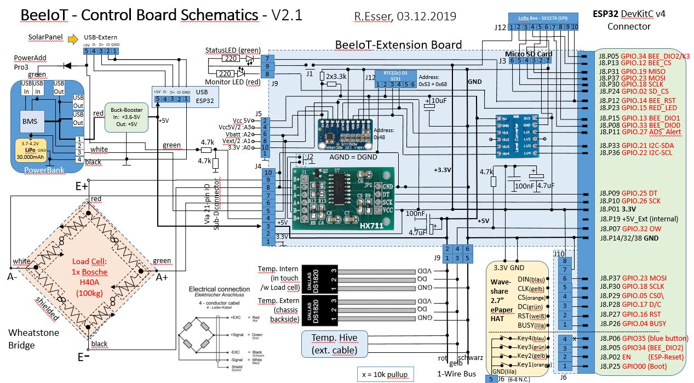
Im Arduino Sketch finden sich dazu folgende Einstellungen:
#include "OneWire.h"
#include "DallasTemperature.h"
// Data wire is connected to ESP32 GPIO 32
#define ONE_WIRE_BUS 32
Zur Anzeige des Betriebszustandes dient eine rote LED am rückseitigen externen Anschlusspanel.
Diese wird über einen GPIO Port getrennt angesteuert und zeigt durch Blinkcodes verschiedene Programm- Zustände (Setup / Loop / Wait)an.
#define LED_RED 15 // GPIO number of red LED
// reused by BEE_RST: Green LED not used anymore
//#define LED_GREEN 14 // GPIO number of green LED
Die aufgeführte grüne LED hatte ursprünglich die Funktion als weitere Statusanzeige musste aber mangels freier GPIO ports und Stromsparzwecken eingespart werden.
Grundsätzlich bietet der ESP32 2 unabhängige SPI ports (VSPI & HSPI) für den Anwender extern an, die per default unter folgenden GPIO Ports (definiert über Arduino.h) erreichbar sind:
// ESP32 default SPI ports:
#define VSPI_MISO MISO // PIN_NUM_MISO = 19
#define VSPI_MOSI MOSI // PIN_NUM_MOSI = 23
#define VSPI_SCK SCK // PIN_NUM_CLK = 18
#define VSPI_CS SS // PIN_NUM_CS = 5
#define HSPI_MISO 12 // PIN_NUM_MISO
#define HSPI_MOSI 13 // PIN_NUM_MOSI
#define HSPI_SCK 14 // PIN_NUM_CLK
#define HSPI_CS 15 // PIN_NUM_CS
Die Kurzbezeichnungen MISO, MOSI, SCK und SS stammen von der Arduino IDE via Arduino.h und definieren damit den default SPI port, wenn man keine weiteren GPIO Angaben in der Initialisierungsfunktion eines jeden SPI devices macht. (Die tatsächlichen GPIO Werte finden sich im Kommentar)
Zur Einsparung von GPIO Ports habe ich alle 3 verwendeten SPI devices (ePaper, SDCardModul und LoRa Bee) über VSPI angeschlossen.
Während die Leitungen MOSI, MISO und SCk zwischen allen Devices geshared werden (Parallel-Anschluss),
benötigt jedes device mindestens seine eigene CS\ Leitung zum Start der individuellen Protokollfensters.
Um Störung in der Startupphase des setup zu vermeiden werden zu Anfangs in der Setup routine alle CS\ Leitungen der 3 Devices auf inaktiv (High) vordefiniert. Das beugt Störungen bei der weiteren sequentiellen Inbetriebnahme der damit inaktiven SPI Modul Schnittstellen vor.
Die Verwendung einer SD Karte ermöglicht einerseits die dauerhafte Ablage großer Mengen an Sensordaten vor dem Versand oder auch als Backup space, wenn keine Konnektivität besteht.
Anderseits kann im Notfall der komplette Datensatz auch manuell am Laptop ausgelesen werden.
 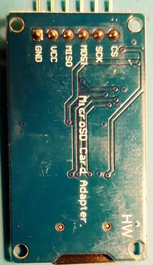
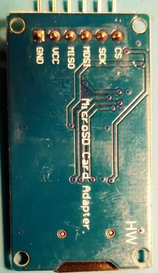
Dieses weitläufig verfügbare Modul enthält einen 3.3V <-> 5V level changer onboard und ermöglicht dadurch eine Vdd Spannung von 3.3V - 5V mit Logikleitungen auf 3.3V.
Beim Anschluss weiterer SPI Devices stellte sich aber heraus, dass der 3.3V Logiklevel nicht immer sauber eingehalten wird (speziell nach einem Reset). Vdd = 3.3V löste das Problem wieder.
Dadurch wird allerdings der 5V -> 3.3V Spannungswandler auf dem DevKitC Modul stärker belastet. (Die möglichen 1 A werden wir aber natürlich nicht erreichen.)
Die GPIO Port Definitionen:
#include <SPI.h> // default for all SPI devices
// Libraries for SD card at ESP32:
#include "SD.h"
// ...has support for FAT32 support with long filenames
#include "FS.h"
#define SD_MISO MISO // SPI MISO -> VSPI = 19 shared with ePD & LoRa Bee
#define SD_MOSI MOSI // SPI MOSI -> VSPI = 23 shared with ePD & LoRa Bee
#define SD_SCK SCK // SPI SCLK -> VSPI = 18 shared with ePD & LoRa Bee
#define SD_CS 2 // SD card CS\ line - arbitrary selection !
#define SPISPEED 2000000 //20MHz clock speed
Über Nutzung von FS.h ist auch der Betrieb mit langen filenames bei größeren Karten möglich.
Dieses Modul unterstützt 2GB - 16GB Micro SD Cards, vorformatiert(!) mit FAT32 Format.
Dieses Modul wäre aber auch ein Kandidat zur Einsparung wenn wir wieter den Strombedarf reduzieren wollen.
Hinweis: Es wird in vielen Artikeln zur Stabilisierung der SD Card Kommunikation empfohlen einen 10kOhm Pullup an der SD-CS-Leitung anzulegen. In unserem Fall ist diese aber an GPIO2 angeschlossen. Der Pullup würde einen weiteren Upload von FW in das FlashRom verhindern -> Timeout. In unserem Fall ist also kein PullUp ohne größeren Aufwand möglich.
Zur stromsparenden Darstellung der aktuellen Zustands- und Mess-Werte musste ein Display her.
Dadurch sieht man wesentliche Werte und aktuelle massnahmen gleich vorort und nicht nur über eine Webseite remote.
Als Kriterien sollen gelten:
Zumindest die ersten 3 Punkte konnte ich durch das ePaper von WaveShare erfüllen:
Ein Stromverbrauch entsteht nur in der Initialisierungs- und Ladephase der Darstellungsdaten.
Größter Vorteil ist aber das passive Darstellungsmedium: ePaper, welches auch bei direkter Sonne wie ein gedrucktes Papier erscheint. Das erhöht die Lesbarkeit im Outdoor-Einsatz enorm.
Ein LCD Display müsste hier nachgesteuert werden und muss dazu dauerhaft mit Strom versorgt werden.
Hat allerdings den Vorteil der möglichen Beleuchtung bei Dämmerung/Dunkelheit.
Allerdings mal ehrlich: wer imkert dann noch ???
Daher hat ein EPaper i.d.R. auch keine Hintergrundbeleuchtung. Dieses Modul weißt neben dem eigentlichen Display dafür noch 4 universelle Schalter zur späteren funktionellen Erweiterung von z.B. verschiedenen Darstellungsebenen auf. Dazu später mehr…

Ursprünglich stellt dieses Modul einen RaspberryPi Hat dar und hat daher auch eine 40-pol. Buchsenleiste kompatibel zum RPi. Für unsere Zwecke verwenden wir den parallelen Kabelanschluss.
mit einem separaten SPI Interface über einen 8poligen Stecker incl Kabel:

Die Anschlussbelegung des SPI Kabelanschlusses:
| Pin | Farbe | Function |
|---|---|---|
| VCC | rot | 3.3V/5V |
| GND | schwarz | Ground |
| DIN | blau | SPI MOSI pin |
| CLK | gelb | SPI SCK pin |
| CS | orange | SPI Chip Selection, low active |
| DC | grün | Data(=1) / Command(=0) selector |
| RST | weiss | Reset, low active |
| BUSY | lila | Busy status output, low active |
Den passenden und umfangreichen DemoCode von WaveShare für RaspberryPi in C++ findet man hier.
Die GPIO Belegung ist atürlich in den leitungen MISO, MOSI und SCK identisch zu SDCard und LoRa Bee.
neben der eigene CS Leitung gibt es noch einen Reset udn einen BUSY “Draht”.
Über BUSY kann man den Upload prozess neuer Display Daten pollen. Deklariert man diese GPIO Leitung im Interrupt mode kann eine asynchrone Bedienung über eine ISR (Int. Service routine) implementiert werden. da wir aber eh ‘10Min.-10Sekunden’ lang nichts besseres zu tun haben, reicht das sequentielle Polling.
// WavePaper ePaper port
// mapping suggestion for ESP32 DevKit or LOLIN32, see .../variants/.../pins_arduino.h for your board
// Default: BUSY -> 4, RST -> 16, DC -> 17, CS -> SS(5),
// CLK -> SCK(18), DIN -> MOSI(23), GND -> GND, 3.3V -> 3.3V
#define EPD_MISO VSPI_MISO // SPI MISO -> VSPI
#define EPD_MOSI VSPI_MOSI // SPI MOSI -> VSPI
#define EPD_SCK VSPI_SCK // SPI SCLK -> VSPI
#define EPD_CS 5 // SPI SS -> VSPI
#define EPD_DC 17 // arbitrary selection of DC > def: 17
#define EPD_RST 16 // arbitrary selection of RST > def: 16
#define EPD_BUSY 4 // arbitrary selection of BUSY > def: 4 -> if 35 -> RD only GPIO !
#define EPD_KEY1 0 // via 40-pin RPi slot at ePaper Pin29 (P5)
#define EPD_KEY2 EN // via 40-pin RPi slot at ePaper Pin31 (P6)
#define EPD_KEY3 34 // via 40-pin RPi slot at ePaper Pin33 (P13)
#define EPD_KEY4 35 // via 40-pin RPi slot at ePaper Pin35 (P19)
Wie oben erwähnt fällt die Bedienung aber etwas aufwändiger aus, denn neben dem SPI API sind dann diverse Font Libs, und ggfs. BitMaps zu laden.
Aktuell verwende ich die Library: https://github.com/ZinggJM/GxEPD
mit dem für mein ePaper device spezifische Extension: GxGDEW027C44.h
// Libs for WaveShare ePaper 2.7 inch r/w/b Pinning GxGDEW027C44
#include <GxEPD.h>
#include <GxGDEW027C44/GxGDEW027C44.h> // 2.7" b/w/r
#include <GxIO/GxIO_SPI/GxIO_SPI.cpp>
#include <GxIO/GxIO.cpp>
// FreeFonts from Adafruit_GFX
#include <Fonts/FreeMonoBold9pt7b.h>
#include <Fonts/FreeMonoBold12pt7b.h>
#include <Fonts/FreeMonoBold18pt7b.h>
#include <Fonts/FreeMonoBold24pt7b.h>
#include <Fonts/FreeSansBold24pt7b.h>
#include "BitmapWaveShare.h"
#define HAS_RED_COLOR // as defined in GxGDEW027C44.h: GxEPD_WIDTH, GxEPD_HEIGHT
Als weiteres Gimmick unterstützt dieses ePaper von Waveshare auch die Farbe rot. Wie sich bei der Anwendung aber herausstellte, verlängert das die eh schon mit >10 Sek. recht lange Display-Update Zeiten nochmal zusätzlich. Hier ist eine Optimierung zur Stromeinsparung noch zu implementieren.
Ist da Display einmal aktualisiert, ud die BUSY Leitung lässt uns “weiter arbeiten/schlafen”, liegt der Stromverbrauch aber nahezu bei 0mA.
Für die remote Connection ohne “stromfressenden” WiFi Betrieb oder nicht-erreichbarem Hotspot, ist ein LoRa Funktmodul vorgesehen. In Europa wird das ISM Band mit 433,05 bis 434,79 Mhz und das SRD Band 863 bis 870 MHz genutzt. Auf EU-868MHz voreingestellt kann es abhängig von der räumlichen Topologie (Satadt/Land) Reichweiten bis zu 2-8km ermöglichen.
Das LoRa-WAN Protokoll ist auf geringe Band-Belastung (OnAir-DutyTime) und geringem Stromverbrauch ausgelegt.
Das verbaute HW-Funkmodul bietet nur den LoRa-MAC layer Übertragungssupport.
Auf die Umsetzung der dazugehörigen Paketübertragungs- und Netzverwaltung sowie den dazugehörigen SW Stack auf beiden Seiten gehe ich in diesem Dokument detailliert ein: BeeIoTWAN_v10.md des zugehörigen Github Projektes BeeIoTGW.
Dort findet sich auch die Beschreibung der BIoT Gateway/Edge-Server Gegenstelle für die weitere Verarbeitung der Sensordaten durch AppServices. Hier vorab schonmal das prinzip Schaltbild der Module des vollständigen BIoT WAN Netzwerkes.
Als Gegenstück ist ein RaspberryPi basierter Gateway vorgesehen, der seinerseits wieder die benötigte leistungsfähigere WiFi/LAN Anbindung hat, um die gewonnenen SensorDaten aller Clients zu validieren, aufbereiten und auf eine Website oder andere Abnehmer (MQTT) zu spiegeln.
Hauptanbieter des LoRa-MAC Layer HW Moduls ist die Firma Semtech, die auch die LoRaWAN Spezifikation v1.0.3 als Member der “LoRA Alliance” mit herausgegeben hat.
Die Firma Dragino hat auf Basis dieses Quasi-Standard Modules (basierend auf dem SX1276/SX1278 transceiver chips) diverse Hats & Shields entworfen.
Der kleinste Vertreter davon (ohne GPS Modul) ist das “Dragino Lora-Bee Modul” (Wiki), welches via SPI angeschlossen wird.
Darauf befindet sich ein RFII95-98W (eigentlich der SX1276 chip) mit SPI Interface. Dieses SX1276 Basismodul von Semtech kann man aber auch günstig (2-6€) in Asien bestellen) und erfüllt denselben Zweck. Die Draginomodule nehmen einem nur zusätzliche Verdrahtung und ggfs. den Antennenanschluss ab.
Die Antenne ist behelfsweise aber auch über einen gewickelten Draht mit der passenden Länge realisierbar.
Dabei ist das Frequenzband bestimmt nach der Formel: 868 MHz > 8,5 cm Draht für eine Lambda/4 Antenne.
Eine SMA Antenne besteht intern ebenfalls nur aus:
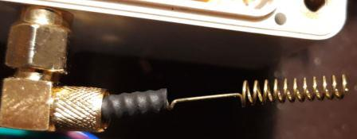
… einem Draht mit einer Wetterschutzkappe:
Die LoraModul-Verdrahtung ist recht einfach:
Neben den Standard shared (!) SPI Leitungen (MISO, MOSI, SCK) gibt es noch die Modul-spezifische CS Leitung zur Modul-Selektion (bei manchen Modulen auch NSS genannt), eine Reset-Leitung (RST) und 6 universelle Daten-IO Leitungen für weitere Funktionen DIO0..DIO5.
Für den Standard LoRa-Modem Betrieb werden die übrigen DIO1-DIO5 Leitung aber i.d.R. nicht benötigt.(Für den FSK Mode werden häufig auch DIO1+2 benötigt).
Manchen SW Stacks (z.B. LMIC) benötigen zum vollständigen Support DIO0-2; der Lora-Lib von Sandeep reicht aber DIO0.
DIO0 triggert z.B. alle LoRa-Mode RX/TX Interrupts (RXDone & TXDone).
Daher habe ich in dieser Schaltung nur DIO0 + DIO1 auf duplex fähige GPIO Leitungen mappen können, und DIO2 auf eine Read Only Leitung (weil sie noch frei war, aber geshared mit dem Key3 des ePaper Moduls; welche aber aktuell ohne Funktion bleibt). Ggfs. kann man darüber noch einen manuellen Sendetrigger imlementieren.
Alle 3 Leitungen werden aber nur im Input Mode betrieben (zur Signalisierung des Semtech Modul Status).
Für eine größere Stabilität am SPI Bus sollten CS udn RST mit 10k-PullUps versehen werden, damit keine Misverständnisse zw. ESP32 und SX1276 entstehen.
Das beim BIoT Client verwendete Dragino Bee Modul ist massgeblich der Träger des Semtech Moduls:
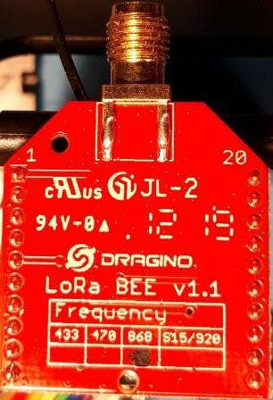 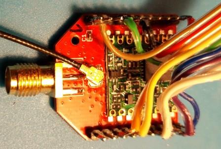
Beim Gateway begnüge ich mich mit dem Smetech Modul + Eigenbau Antenne (noch).
Auf dem 2. Bild ist das grün gefärbte Semtech LoRa Modul gut zu erkennen.
Die Spezifikation weisst folgende Eigenschaften aus:
Das Dragino Manual dazu findet sich hier.
Da aber nahezu alle Leitungen des SemTech Moduls 1:1 am Bee-Sockel ausgeführt sind, kann man im Grunde jede Bibliothek verwenden, die den SX1276 (für 868MHz) unterstützt.
Die aktuell verwendeten GPIO Port Definitionen:
#include <SPI.h> // default for all SPI devices
// Libraries for LoRa
#include "LoRa.h"
// LoRa-Bee Board at VSPI port
#define BEE_MISO VSPI_MISO // SPI MISO -> VSPI
#define BEE_MOSI VSPI_MOSI // SPI MOSI -> VSPI
#define BEE_SCK VSPI_SCK // SPI SCLK -> VSPI
#define BEE_CS 12 // NSS == CS
#define BEE_RST 14 // Reset\
#define BEE_DIO0 33 // Main Lora_Interrupt line
#define BEE_DIO1 13 // for Bee-Events
#define BEE_DIO2 34 // unused by BEE_Lora; connected to EPD K3 -> but is a RD only GPIO !
Die Rolle des Client Node MAC layers ist in dieser Backend Specification festgehalten
Für ESP32 MAC Layer Testzwecke habe ich im Sketch aktuell die Lora-Library von Sandeep (GitHub) in Verwendung. Diese ist für eine stabile MAC Layer Kommunikation vollkommen ausreichend.
Die Antenne wird bei einem SMA Anschluss einfach aufgeschraubt: fertig.
Es reicht wenn die Antenne innerhalb der Box verbleibt. Man kann die Reichweite natürlich vergrößern, wenn sie nach aussen geführt wird und ein direkter “Sichtkontakt” zum Gateway gewährleistet ist (z.B. bei TopRoof-Montage).
Genaue Reichweiten Messungen stehen aber noch aus…(für die 20cm Beton-Kellerdecke reicht es aber schonmal).
NearBand-IoT ist grundsätzlich eine LTE basierte Kommunikation mit SIM Karte und LTE-Provider, wie bei jedem Smart-Mobile auch. NB-IoT verwendet aber insbesondere die niederfrequenten Band-Anteile und erreicht damit eine bessere Durchdringung von Gebäuden. Ein Client im 3. Stock einer Tiefgarage soll damit problemlos möglich sein, was für die meisten Smart-Home Anwendung aureichend sein sollte.
Als Sender mit einem SIM Kartenleser Modul habe ich mir den häufig verwendeten und Library seitig gut unterstützten SIM700E mit GPS Maus (optional) support ausgesucht.
Leider benötigt es als echtes SIM Modem eine serielle RX/TX ANbindung, wofür weitere 2 GPIO Leitung benötigt werden. Da diese aktuell nicht mehr frei sind, bleibt es erstmal bei der LoRaWan Anbindung.
Das von mir bestellte Modul:
Waveshare NB-IoT eMTC Edge GPRS GNSS Hat incl. Antenne

=> Link zum SIM7000E-HAT Wiki
Es verwendet folgende ESP32 Anschluss pins (falls verfügbar)
Für eine gutes Monitoring und auch für die LoRaWAn Kommunikation ist stets die genaue Uhrzeit zur Synchronisation der Datenpakete nötig.
Für eine genaue Uhrzeit kommen 2 Quellen in Frage:
Beide sind im Sketch implementiert und redundant zueinander verschaltet:
Besteht keine WiFi Verbindung wird das RTC Modul direkt befragt. Ansonsten wird via WiFi Verbindung Kontakt zu einem NTP Server aufgenommen und das lokale RTC Modul neu mit der NTP Zeit synchronisiert.
Darüber erhalten wir stets eine hinreichend genaue Uhrzeit vor.

Dieses RTC Modul mit DS3231 chip enthält neben einem sehr genauen Uhrzeitmodul auch ein internes EEPROM zur residenten Ablage von Betriebsdaten im Sleep Mode. Dies ist eine zusätzliche Alternative zur ESP NVRAM area oder gar der SDCard. Weitere Test müssen aber noch herausarbeiten, welcher Weg den geringeren Stromverbrauch bei hinreichender Speichergröße für die Sleep Mode Housekeeping Daten darstellt. Auch ist die Häufigkeit der Widerbeschreibbarkeit ein Thema, da der Sleep Mode alle 10-Minuten gestartet wird.
Dieses EEPROM 2432 ist mit einer eigenen Stromversorgung über ein 3V onboard Lithium-Akku (LIR-2032/3.6V)gepuffert.
Alternativ kann der Li-Akku auch durch eine normale 3V Li Zelle (CR2032 oder CR2016) ersetzt werden, dann aber mit endlicher Laufzeit. Eine “LostPower()” Funktion erlaubt einen Batterie-Stromausfall zu erkennnen und nachträglich abzufragen, um dann ggfs. die Uhrzeit neu zu stellen.
In rot umrandet eingezeichnet sind die, von mir vorgenommenen und allseits empfohlenen Änderungen um den Stromverbrauch weiter zu reduzieren:
Das ergibt folgendes Mapping im I2C Adressraum des ESP32 Treibers:
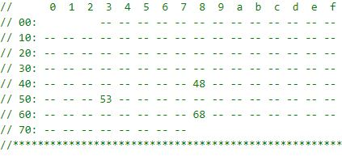
Hinter der Adresse 0x48 verbirgt sich das ADS1115 Modul.
Das I2C API wird am ESP32 über 2 frei definierte GPIO Leitungen realisiert:
// RTC DS3231 Libraries
#include "RTClib.h"
// based on Wire.h library
// ->referenced to pins_arduino.h:
// static const uint8_t SDA = 21;
// static const uint8_t SCL = 22;
RTC_DS3231 rtc; // Create RTC Instance
Die RTClib unterstützt die RTC Typen: RTC_DS1307, RTC_DS3231, RTC_PCF8523
Die rtc.begin() Funktion stützt sich auf die default I2C GPIO Einstellungen der Wire Lib ab, wie sie über die IDE im Rahmen der Standard Wire-Library (Wire.h) definiert, verwendet werden.
Über das RTC Modul kann man sehr elegant zu Testzwecken weitere I2C Module anschliessen (unten im Bild), da die I2C Leitungen durchgeschleift wurden. Die benötigten Pullup Widerstände für SDA udn SCL Leitung befinden sich zur Entlastung der ESP32 Ausgangstreiber ebenfalls onboard, sichtbar durch 2 SMD chips mit dem Aufdruck 472 (verbrauchen aber ca. 4 mAh !).
Als weiteres Feature führt dieses RTC Modul einen internen Chip-Temperatursensor, den man elegant auslesen kann. In diesem Fall verwende ich ihn zum Monitoring der Extension BOX internen Temperatur, um einem ev. Hitzetod der Elektronik an heissen Sommertagen vorzubeugen.
Zuletzt gibt es noch einen SQW Pin, an dem man sehr genaue Frequenzen programmieren kann um ext. Prozesse zu steuern. Aktuell wird er in diesem Projekt aber nicht verwendet -> DS3231_OFF … aber gut zu Wissen.
/** DS3231 SQW pin mode settings */
enum Ds3231SqwPinMode {
DS3231_OFF = 0x01, // Off
DS3231_SquareWave1Hz = 0x00, // 1Hz square wave
DS3231_SquareWave1kHz = 0x08, // 1kHz square wave
DS3231_SquareWave4kHz = 0x10, // 4kHz square wave
DS3231_SquareWave8kHz = 0x18 // 8kHz square wave
}
Als größter und wichtigster Stromverbraucher gilt das ESP32-DevKitC board im Wifi + BT Modus mit bis zu 100mA an 3.3V. Diese Stromversorgung erhält der ESP32 selbst aber über das DevKitC Board und einem onboard Spannungswandler (AMS1117-3.3) von einer 5V USB Buchse.
Über den externen USB Port kann ebenfalls eine Ladespannung von 5V angelegt werden. Diese kann von einem PC, USB Netzteil oder einem 5V Photovoltaik Ladepanel stammen.
So existieren auf dem Extension Board 2 Hauptversorgungsleitungen:
Manche Module benötigen aber auch 5V, wodurch als Gesamt-Extension BOX Versorgungsspannung 5V gewählt wurde.
Diese 5V können über verschiedene Wege bereitgestellt werden:

Ohne weitere Optimierungen und ohne Sleepmode verbraucht der akt. Aufbau ca. 200mA im aktiven Zustand.
Der direkteste und einfachste Weg ( wie auch zu testzwecken bei Arduinos üblich) ist natürlich direkt über einen externen USB Port als Ladeanschluss (max 1A möglich).
Vorteil: Einfach und günstig über ein USB Ladegerät bereitzustellen.
Nachteil: Die Reichweite ist zur Vermeidung von Stör-/Strahlungseinflüssen auf wenige Meter beschränkt.
–> Es erfordert einen wetterfesten Netzanschluss „in der Nähe“ (ev. ideal für die Heimgartenlösung).
In diesem Projekt wird ein exter USB Port als Lade- und Maintenance Port verwendet:
Hierfür habe ich steck-/lötbare Micro USB Buchsen verwendet und die zuleitungen wie oben beschrieben gesplittet.
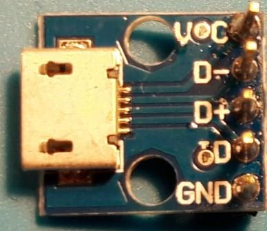
Hierüber ist damit weiterhin ein problemloser offline Betrieb mit Datenzugriff zum FW upload auf den ESP32 möglich.
Als ladbare Batterie kämen in Frage ein
Natürlich wäre eine extern geladene Lithium Batterie wie z.B.
Lithium Akku 12-7.5 12,8V 7,5Ah 96Wh LiFePO4 Lithium-Eisenphosphat für 100€
über einen StepDown Wandler auf 5V der einfachste Weg eine konstante Spannungsversorgug sicherzustellen. Ist von 12V kommen aber mit größeren Wandlungs-Verlusten behaftet, und aufgrund von Gewicht und Abmaßen recht unhandlich.
Eleganter geht es mit einem Akkupack, welches in die Waage eingebaut werden kann und gleich ein Lade/Entlade Management Modu mit sich bringt. Viele dieser Varianten unterstützen aber nur Be- oder Entladung, gekoppelt mit einem weiteren Steckzyklus bei der Umschaltung.
Es gibt aber auch sogenannte “Passthru”-Regler die gleichzeitg Laden und Entladen beherrschen.
Ein günstiger Vertreter ist: POWERADD Pilot Pro4 Powerbank mit den Eigenschaften:
Dummerweise ist die interne Lade/Entladeintelligenz auch hinderlich, wenn sie der Meinung ist, ein ESP32 im Sleep Mode wäre “nicht vorhanden”. Denn dann wird der Ausgang einfach abgeschaltet. Genauere Messungen ergaben aber, dass der Ausgang nicht vollständig abgeschaltet wurde, sondern nur der StepUp Regler umgangen wurde. Es lagen dann am Ausgang die direkte Batteriespannung zw. 3.2 - 4.2V an.
Daher habe ich mich entschlossen die Charge Funktion zu erhalten, die Ausgangskontrolle aber einfach zu umgehen und die internen Anschlüsse direkt anzuzapfen:
Dadurch haben wir innerhalb der Extension Box alle Optionen diese Powerbank zu integrieren:

Der Linearregler: LM2577 liefert einstellbar saubere 5V und regelt definiert auf 0V runter, wenn die IN-Spannug auch gen 0V geht (Ein-/Ausschaltverhalten). Überschreitet der EIngang allerdings den eingestellten AUsgangswert von 5V, steigt auch der Ausgang mit an ! In unserem Fall aber ken problem, weil der LiFe Akku kaum mehr als 4.2V liefern könnte.
Weitere Eigenschaften des LM2577:
Ein ähnliches Exemplar nur ohne LED ANzeige:
ANGEEK DC-DC Boost Buck Adjustable Step Up Step Down Automatic Converter XL6009 Module 6,99€
aber mit einem BuckBoost Converter XL6009, regelte am Ausgang plötzlich auf ca. 15V hoch, wenn die Eingangsspannung unterhalb 3.2V ging. Erst weit unter 2V ging die Ausgangsspannug auch gegen 0V.
Diese Episode hätte den ESP32 in die ewigen Jagdgründe geschossen.
So bleibt es erstmal bei dem etwas mehr Strom verbrauchenden Wandler mit LED Anzeige und Linearregler.
Die so gewonnen 5V werden so lange geliefert, wie der LiFe-Akku nicht unter 3.2V kommt.
Darum habe ich im Programm über einen ADS1115 gemessen folgende Batterieschwellwerte festgelegt, die für jede 3.7V LiFe Akku gelten:
#define BATTERY_MAX_LEVEL 4150 // mV -> 100%
#define BATTERY_MIN_LEVEL 3200 // mV -> 0%
#define BATTERY_SHUTDOWN_LEVEL 3100 // mV -> -10%
An dieser Stelle hilft es die Energie-Rechnung aus Kapitel: Die MCU Arduino/ESP32 Platform nochmal nachzurechnen:
Pro Tag kämen wir auf einen Gesamtverbrauchsmix:
Und das ohne jede Aufladung. Ergänzen wir das ganze noch mit einem 5V PV-Solar Modul am ext. USB port …
Um die oben genannten Lade-/Entladezyklen verfolgen zu können, habe ich einen 4-port AD Wandler ADS1115 spendiert der über einen 3.3V <-> 5V levelchanger ebenfalls am I2C Port des ESP32 hängt.
Falls eingestellte Schwellwerte erreicht werden, wird die Alertleitung als Interrupt genutzt.
Dies ist z.B. der fall wenn der BATTERY_MIN_LEVEL an der Akku+ Line erreicht wird,
dann muss die Stockwaage abgeschaltet werden (bzw. Dauersleepmode) um den Lithium-Akku zu schützen.
Für die eigene Versorgungsspannung Vcc= 5V des Converters habe ich 5V gewählt um ein größeres messbares Spannungsfenster an den AnalogPorts verfügbar zu haben: 0V – 4,096V -> 1mV / Step .
Die 3.3V GPIO Pegel werden über einen duplexfähigen Level Converter per Datenleitung auf 5V Pegel umgesetzt.
Über 2x 3.3kOhm Widerstände werden am ADS1115 AnalogPort 3 ein Spannungsteiler zur Messung der (eigenen) 5V Spannungsversorgung ermöglicht. Ähnlich müsste man bei größeren Spannungsquellen verfahren die >4V liegen.
Durch die Verschaltung des ADDR = 0 Anschlusses erhalten wir die I2C Adresse 0x48. Somit kein Konflikt mit dem RTC Modul zu befürchten.
Hier die Definitionen des ADS im Sketch:
#include <Adafruit_ADS1015.h> // support for ADS1015/1115
// ADS1115 + RTC DS3231 - I2C Port
#define ADS_ALERT 27 // arbitrary selection of ALERT line
#define ADS_SDA SDA // def: SDA=21
#define ADS_SCL SCl // def. SCL=22
// ADS1115 I2C Port Address
#define ADS_ADDR 0x48 // I2C_ADDRESS 0x48 -> ADDR line => Gnd
// ADS device instance
Adafruit_ADS1115 ads(ADS_ADDR); // Use this for the 16-bit version
Dank der Adafruit Library ist die Nutzung des recht komplizierten aber leistngsfähigen I2C Interfaces des ADC1115 sehr einfach geworden:
adcdata = ads.readADC_SingleEnded(channel); //channel = 0..3
// ADC internal Reference: +/- 6.144V
// ADS1015: 11bit ADC -> 6144/2048 = 3 mV / bit
// ADS1115: 15bit ADC -> 6144/32768 = 0.1875 mV / bit
data = (int16_t)((float)adcdata * 0.1875); // multiply by 1bit-sample in mV
Die oben errechneten 215 Tage Laufzeit können ggfs. noch verlängert/stabilisiert werden, wenn eine zusätzliche Stromversorgung zur Ladung ins Spiel kommt.
Zur Erhaltung der Mobilität liegt die Lösung in einem externen PV Modul/Panel:

Solar Charger RAVPower 16W Solar Panel für 46€ (23.9 x 16 x 2 cm)
Die Besonderheit liegt in der hohen Dynamik der Energieversorgung durch wechselnde Sonneneinstrahlung, weswegen ein nachgeschalteter interner Laderegler via Batterie die Energie puffert und in die gewünschte Zielspannung von 5V umsetzt.
Auch hier ist das Angebots-Spektrum sehr groß, von einem 180W Panel 1,8m x 0,8m Größe bis hin zu einem 40W Faltpanel, teilweise gleich mit Micro USB Kabel Anschlüssen.
Auch hier müssen wir eine Lösung finden, die im Schnitt 5V liefert und dies mit ausreichender Leistung. Solche Module sind häufig im Campingbereich zu finden, als Kompromiss zw. Mobilität und Leistung.
In unserem Fall wäre es kein großes Problem ein kleines Panel neben die Beute zu platzieren.
Im Winter läuft man allerdings Gefahr, dass der Schnee zu lange die Energieversorgung ausbremst und die Batterie leerläuft.
Die Handhabung ist denkbar einfach: Auseinanderfalten, mit einem Nagel an der Beuten-Südseite sicher befsetigen, und per Micro USB Stecker an das Steckerpanel der Stockwaage, wo sich der ext. USB Connector befindet.
Den Rest erledigt die Akku-interne Ladekontrolle, solange das Panel 5V liefern kann. Und das ist dank eines PV-nternen step Reglers recht lange der Fall.
Bei einem trüben aber freundlichen Märztag war eine PV Modul interne interne PV-Modul-Spannung von 14,6V über mehrere Stunden gegeben. Tests bei Vollsonne stehen noch aus…
Langzeittest besonders bzgl. Wetterfestigkeit stehen aber noch aus.
Neben dem günstigen obe beschriebenen PV Modul mit integriertem 5V Ausgangsregler via USB Stecker, sind aber noch leistungsfähigere Module denkbar, die aber auch leistungsfähigere Laderegler für z.B 12V Akkus benötigen.
Die effiziente Energieverwaltung/Verteilung durch zeitgleiche Ladezyklen und Verbrauchsphasen soll über ein eigenes Ladekontrollmodul erzielt werden.
Erste Versuche in diese nächst höhere Leistungsklasse habe ich mit dem sehr günstigen PV Solar Panel MPPT Laderegler von Sunix gestartet:

Modell: SU-SU702 (CMTD 2420) / 10A mit den Maßen: 14,4 x 8,3 x 4,1 cm für 13,99€
Er hat die interessante Zusatzfunktion neben jeder Eingangsspannung bis 70V und der Batterieausgangsspannung zw. 12-14.3V auch 2 Standard USB Ports anzubieten mit geregelten 5V.
Diese würden direkt für den Betrieb der ESP32 Stockwaage herhalten können.
Die Kennwerte dieses Moduls sind:
Nennspannung : 12V / 24V (Auto-Switch)
Max. Lade / Entlade-Strom : 10A
Max. Solar-Panel Eingangs-Spannung : =50V
Stop-Ladespannung : 14.7V / 29.4V
Nieder-Voltage-Wiederherstellung : 12,2 V / 24.4V
Nieder- Spannungsschutz : 10.5V / 21.0V
USB-Ausgangs-Spannung / Strom : 5V 2A
Kein- Lade-Verlust : =10mA
Temperatur Kompensation : -3mV / Cell / ° C
Betriebs-Temperatur : -20 ° C ~ 60 ° C
Mit folgenden Schutzmassnahmen:
Mit diesem Laderegler ist es möglich die Batterie-Beladung durch unterschiedliche Stromquellen über Dioden zusammengeführt zu konfigurieren, während ein Verbraucher parallel versorgt wird (können viel Batteriepacks nicht: nur Laden oder nur Liefern)=> PassThru Mode.
Über 2x BY500 Dioden lassen sich weitere Stromlieferanten am Eingang einpflegen.
Bei dem angedachten Verbrauchspegel des ESP32 Moduls ist dieser Ansatz aber ein Overkill, da alleine der Eigenverbrauch höher liegt, als der, des zu versorgenden Verbrauchers.
Die Anforderungsliste liest sich gut:
| Index | Stück | Bezeichnung | Hersteller | Bezugsquelle | Preis | Kommentar |
|---|---|---|---|---|---|---|
| 1 | 1 | Plattformwägezelle H40A-C3-0100 | Bosche | http://www.bosche.eu | 58€ | H30A v H40A 100kg |
| 2a | 1 | ESP32-DevKitC v4 | OSS | Amazon | 20€ | (WROOM32 oder WROVER32) |
| 2b | 1x | SD HC Karte 2GB | Amazon | 5€ | ||
| 3 | 1x | HX711 24 Bit A/D Wandler | Amazon | 10€ | mit grüner Lackschicht! | |
| 4 | 2x | Montageplatte für Wägezelle ALU 200 x 200 x 10mm | Schlosserei | 200€ | Keine Beschichtung | |
| 5 | 2x | 4-kant Unterlageholz | Baumarkt | 10€ | 20x40x500mm | |
| 6 | 1x | IP67 Kunststoff-Montagebox | Maße 70x80x160mm | Amazon | ||
| 7 | 3x | Temperatursensor DS18S20 | Dallas | Amazon | 7,5€ | Mit 1,1m Kabel |
| 8 | 1x | MSP Siebholzplatten 520x410x10mm | Baumarkt | Baumarkt | 20€ | |
| 9 | 1x | MSP Siebholzplatten 490x380x10mm | Baumarkt | Baumarkt | 20€ | |
| 11 | 2x | 520x70x10mm | Baumarkt | Baumarkt | 5€ | |
| 12 | 2x | 390x70x10mm | Baumarkt | Baumarkt | 5€ | |
| 13 | 16x | M12 30mm Senkkopfschrauben | Baumarkt | Baumarkt | 16€ | |
| 14 | 18x | 4x50mm Senkkopfschrauben | Baumarkt | Baumarkt | 10€ | Verbindung der MSP Platten+Leim |
| 15 | 1x | POE Einspeiser & Wandler 1Gb/s & POE 48V->5V | Amazon | 15€ | 1Gb/s & Mini-USB | |
| 16 | div. | Litze D:1mm ca. 3m | Amazon/Conrads | 10€ | Sensorverdrahtung | |
| 17 | 1x | Alu/Kunststoff-Platte 120x60x1,5mm | Amazon | 8€ | Anschlusspanel | |
| 18 | 1 | 5-pol wetterfeste Durchführungs Rundstecker & Buchse | Amazon | 5€ | Für ext. OneWire Sensoren | |
| 19 | 1 | Epoxid Rundlochplatine Euro-Format(einseitig) | Conrads/Amazon | 5€ | ESP32 + GPIO Sensorverstärker (HX711 und OneWire Bus) | |
| 20 | 1 | Sub-D 25-pol. Stecker & Buchse | Conrads/Amazon | 5€ | Zum Durchführen der HX711 und OneWire Bus-signale am K.Stoff-Gehäuse | |
| 21 | 1x | 4-channel Level Converter für 3V <-> 5V Pegel, bidirektional | Amazon | 4€ | ||
| 22 | 1x | A/D Converter ADS1115S | Voelkner | 5€ | 4-fach 16Bit A/D Wandler mit I2C API zur Versorgungs-Spannungsmessung | |
| 23 | 1x | Micro USB Buchse | Amazon | 8,50€ | Zur USB-A Port Durchführung am Aussenpanel | |
| 24 | 2x | 10-polige Steckerleiste | Printmontage | Amazon | 1,50€ | Stecker für die ADS1115S + HX711 Ports |
| 25 | 2x | 8-polige Steckerleiste Printmontage | Amazon | 1,50€ | Stecker für das ePaper 2in7 API + OW/LED Leitungen | |
| 26 | 2x | 3.3kOhm Metallfilm Widerstand 1/4W | Voelkner | 0,10€ | Als Spannungsteiler am Analogport 3 des ADS1115S | |
| Optional: | ||||||
| 27 | 1x | ePaper Display 2in7 von WaveShare 264x176 pixel 3.3V | Amazon | 25€ | Extrem stromarmes S/W Display 2,7 Zoll mit SPI Interface | |
| 28 | 1 | RJ45 1Gb/s wetterfeste Durchführungsbuchse | Amazon | 10€ | Für LAN & POE Anschluss | |
| 29 | 1 | LAN Kabel Cat6 Outdoor 10-30m | Amazon | 20-40€ | Länge nach Erreichbarkeit des Switch |
Das Aussengehäuse bestehend aus MBF Platten besteht aus einer Coverhülle und einer Bodenplatte.
Auf die Bodenplatte ist die Waagrzellenkonstruktion verschraubt. Die Coverhülle, welche von oben mit dem Wäägemodul verschraubt ist, schwebt quasi frei darüber und ermöglicht so die Gewichtskraft auf die Wäägezelle zu übertragen.
Hier sieht man schematisch im Querschnitt die Auflagekonstruktion der Wägezelle.

Der damit verbundene Deckel + Compute Node + Power Module schwebt über dem Bodenelement und liegt samt komplettem Beutengewicht ausschliesslich auf den etwa 16cm2 Fläche der verschraubten Wägezelle auf. Dies erreicht man über 6-8mm starke Zwischenbleche jeweils an der oberen und unteren Verschraubung der Wägezelle, die je mit 4x M10 Senkkopf-Schrauben fixiert ist.
Steht die i.d.R. 50-70kg schwere Beute auf der Waage schwankt sie recht steif über der Bodenplatte. Dies ist ein Zeichen dafür, dass das Waagzellen Element aktiv die Kraft aufnimmt und nirgends aufliegt.
In der Rückwand ist das Anschlusspanel + ePaper Display Panel eingearbeitet und sowie die notwendigen Aussenanschlüsse.
(Einbau als Single-point Wägezelle)
Die Wägezellen von Bosche für Plattformwaagen gibt es in 4- oder 6-pin Ausführung.
Beide sind funktionell gleichwertig:


Hier kommt die übliche Wheatstone-Brücke zum Einsatz, die die beste Temperatur-Kompensation bei hoher Messgenauigkeit bietet. Die Temperaturkalibrierung an den Dehnmesstreifen wurde werksseitig schon vorgenommen. Ggfs. bei Temperaturen kleiner -5Grad kann noch eine rechnerische Kompensation softwareseitig überlagert werden und sinnvoll sein.
Der Einbau gestaltet sich sehr einfach. Einzig die Fixierung der jeweils 4 Schrauben pro Auflagefläche muss sehr stabil und genau erfolgen. Hier setzt der Hebel des gesamten Beutengewichts samt Waagedeckel an.
Dazu die Auszugsbilder aus der mechanischen Applikations-Beschreibung:

sowie die einfache Konstruktion, wie sie hier zum Einsatz kommt:
Die obere und untere Platte zur Kraftübertragung auf die Wägezelle sollte mind. 6-8mm betragen und idealerweise aus Edelstahl. Aus Kostengründen geht aber auch Aluminium. Dann aber besser mit 10mm Stärke. Die Plattenmaße betragen bei mir 18 x 18cm (darf aber auch größer sein).
Die Distanzscheiben habe ich mit je 4mm gewählt und bestehen aus separaten kleinen Aluscheiben mit dem Maßen 6x6cm inkl. den benötigten 4 Bohrungen für die M12 Schrauben. Ohne die Abstandsscheiben kann die Wägezelle durch das Gewicht nicht verformt werden !
Die Bohrungen in der Platte sollten 1mm größer ausfallen als die Schraubenstärke und nach „aussen“ konisch durch einen Phasenschneider erweitert werden. Dadurch kann man die als Senkschrauben ausgelegten 2x4 M6-M8 Schrauben bündig abschliessen. Dies ist nötig um die Gehäuse-Deckel/Boden bündig auf die Platten zur bessern Kraftübertragung anzubringen.
Die Überlastsicherung besteht aus einer M6 - M8 Gewindebohrung an der untern (oder oberen Platte) und einer Schraube, über die der Arbeitsbereich der Wägezelle eingestellt werden kann. Bei einer 100kg Wäge-Zelle erzeugt man ein Testgewicht von 110kg und man dreht die Schraube solange ein bis sie leicht an der Wägezelle aufstehen. Dadurch wird einer zerstörenden Verformung des Zellenkörpers vorgebeugt (z.B. wenn man sich auf der Beute abstützt bei aufliegendem vollen Honigraum).
An einer Seite schaut das 4/6 adrige Kabel heraus, welches zum A/D Wandler HX711 der Compute-Einheit führt.
Zuletzt wird die Platte durch weitere Gewindebohrungen mit kurzen M12 Schrauben mit dem Gehäusedeckel-/Boden verschraubt.
Hier nochmal das Lagebild der Wägezelleneinheit mittig zum Gehäusedeckel:

Das Gehäuse Panel ist der einzige Anschlussbereich nach Aussen. Daher werden dort wasserfeste Stecker-Kombinationen eingesetzt:
Als Träger dient eine korrosionsbeständige eloxierte ALU Platte (1mm). An dieser lassen sich die Buchsenlöcher gezielt herausarbeiten; sie trägt aber nicht so stark auf wie eine Holzplatte und kann daher in einen Rahmen mit ausgefrästem Grat eingesetzt werden.
Es sind 2 LEDs eingebaut, die Betriebszustände der Stromversorgung und die Betriebsaktivität anzigen können. mangels freier GPIO leitungen ist aktuell nur die rote LED angeschlossen.
Die Aussenansicht des Backpanels + ePaper Panel:
Die Innenansichten der Anschlussstecker und der MCU Extension-Box:
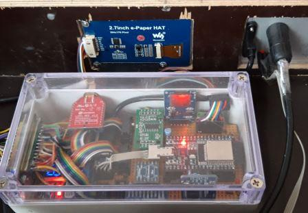
One-Wire Sensoren werden über 3 pol. Anschlüsse (Masse-GND, Versorgungsspannung Vcc und Daten) parallel miteinander verbunden.
Durch das OneWire Bus-Protokoll können somit leicht mehrere Sensoren unterschiedlichster Art/Funktion hintereinander, an demselben Anschluss verbunden werden. Bei den ESP32 GPIO Ports sind allerdings nur max. 8 Sensoren in Verbindung mit 3.3V Vcc in Kombination mit abgeschirmtem Telefonleitungen zu empfehlen.
Jeder Sensor hat dabei zur Erkennung eine einzigartige 64 Bit unique ID. Verwendbar sind die Sensoren an Spannungen mit 3-5V. Wir verwenden hier 5V.
Der ESP32 erlaubt mit seinem GPIO Matrix Konzept jeden beliebigen IO-Port zum OneWire Bus-Port zu erklären. Der OneWire Driver wendet das OW-Protokoll, wie vom Hersteller „Dallas“ spezifiziert, dann auf diesen Port an.
Die Störanfälligkeit der Messwerte ist gering, dank digitaler Übertragung. Die Datenleitung benötigt dazu allerdings einen Pullup von 4.7k Ohm einmalig (!) von der Daten- auf die 3.3V Leitung (unabhängig von der gewählten Versorgungs-Spannung!).
Neben den 2 internen Temperatursensoren habe ich über einen 7-poligen Stecker die OW-Busleitungen nach Außen zugänglich gemacht, um weitere externe Sensoren zu ermöglichen.
Der DS18B20 OneWire Sensor ist besonders praktisch für das Messen von Temperaturen in Wasser oder feuchten Umgebungen dank wasserdichtem 1,10m langem Kabel und der vergossenen 3 cm langen Metall-Messsonde.
Der Temperaturbereich reicht von -55 bis 100 Grad.
Dieser OneWire-Digital-Temperatursensor ist sehr präzise (±0,5°C Genauigkeit von -10°C bis +85°C) dank einem internem vorkalibriertem 12Bit A/D Wandler und ist somit für unsere Messungen mehr als hinreichend.
Das wären 4096 Messteilwerte über den gesamten gemessenen Temperaturbereich.
Verfügbare Ausführungen:
Kabellänge von etwa 90-110cm lang mit Durchmesser 4mm, unkonfektioniert
Sensor-Anschluss mit 4-adrigem Kabel:
Die äußere Kupferader wird an die Drahtabschirmung mit dem Stecker/Gehäuse verlötet.
Sensor-Anschluss mit 3-adrigem Kabel:
Weitere Links:
Obwohl die Versorgungsspannung für 1-Wire-Devices normalerweise 5 V beträgt, ist beim ESP32 die verringerte Spannung von 3,3 V nötig, weil dessen GPIO-Ports nur 3,3 V vertragen und durch höhere Spannungen zerstört werden.
Nachfolgende Bilder zeigen die verschiedenen Anschlussmöglichkeiten. Dabei sind die dargestellten Chipformen in unserem Fall in einer Metallhülse vergossen.


(Wie erwähnt: der Pullup Widerstand wird nur einmal intern angeschlossen.)
Das Herzstück des Computnodes ist im BeeIoT-Client Modell der ESP32-DevKitC.
Dieser sowie alle weiteren empfindlichen elektronischen Module wurden in eine IP67 dichte Box eingebaut. Das beugt Kondenswasserschäden vor. Widererwartens habe ich auch bei höchsten Aussentemperaturen kein Temperaturproblem am ESP32 gehabt. Dies kommt wohl durch die Isolationswirkung der massiven aufstehenden Beute von Oben:

Die MCU sowie alle Sensormodule sind auf einer Lochrasterplatine untergebracht:
Der HX711 A/D Wandler für das Wägezellenmodul, dem Level Converter & ADS1115S, sowie diverser Widerstände und Kondensatoren zur Leitungspufferung. (Details siehe Schaltplan).
Hier der vollständige Ausbau inkl. aller Module (auch dem LoRa Bee in rot):

Über den 25 pol. Sub_D Stecker (links) wird u.a. auch die Akku-Out Zuleitung in die Box geführt, wo sie von dem StepUp Regler (Mit LED Anzeige) auf 5V gewandelt wird.
Von rechts oben führt ein Mini-USB Stecker die externe USB Verbindung in die Box mit dem datenanteil direkt an den ESP32. Von der Lochraster-Platine wiederum führen mehrere Steckervarianten die Sensorleitungen zu dem extern 25-pol. Sub-D Stecker. Hierfür gibt es sicher noch elegantere Steckverbinder Lösungen ev. incl. Abschirmung. Dieser Aufbau erwies sich aber als erstaunlich wenig störanfällig, trotz Ausseneinsatz und einer langen (3m) USB Zuleitung für Testzwecke.
Hier nun eine Übersicht aller verwendeten Steckervarianten:

Hier nun die Steckerbelegungen aller internen Steckverbinder auf der Lochrasterplatine
Die Adapterplatine mit Komponentenbeschriftung:

Anders als bei meiner letzten BeeLog Projekt Beschreibung mit Raspberry Pi gibt es bei ESP32 nicht viel vorzubereiten, da wir keine OS Instanz zu konfigurieren haben.
Eine schrittweise Einführung und Konfiguration der ESP32 Einheit ab der SD Karten Vorbereitung bis zum prinzipiellen Ablauf der Logger SW ist aber ev. doch sinnvoll.
Wer sich noch nicht so sehr mit dem ESP32 auskennt, dem sei diese Einsteiger Buch Kolbans Bok on ESP32 v2018 empfohlen.
Die Vorzüge des ESP32 DevKit C habe ich eingangs dieser Beschreibung schon diskutiert.
Hier nun der vollständige Schaltplan der Konstruktion inkl. GPIO Ports am DevkitC board Connector J8 :
Der Testaufbau erfolgte mit einer Lochrasterplatine + Fädeldraht-Technik.
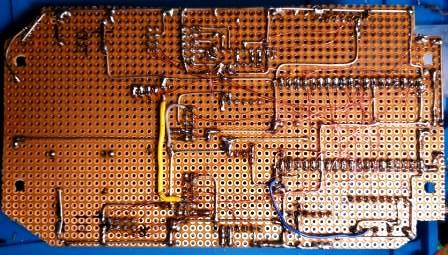
Die interne WiFi Antenne des devKitC Boards hatte innerhalb meines Hauses keine Reichweitenprobleme.
Auch für das loRaan Modul wird eine Duck Antenne direkt an die Extension Box geschraubt und bleibt damit noch innerhalb der Waagenbox. Sollten sich hier reichweitenproblme anmelden, ist es leicht möglich eine Antenne mit längerem Kabel auserhalb zu platzieren.
Da der ESP32 keine USB Port Erweiterungen ermöglicht bleibt der ext. USB Stecker rein für die Ladespannung oder FW Update reserviert.
Hier die vollständige DevKitC Sockel-Belegung J8, wie sie für alle Modelle ab v4 gültig ist:

Jeder GPIO Port darf allerdings nur mit max. 50mA an 3.3V belastet werden.
Nach dem vollständigen Aufbau und Fertigstellung der Verdrahtung des Extension Boards samt externer Sensor Zuleitungen bleibt nur noch eine 2-16GB große Micro SD Karte mit FAT32 zu formatieren (Quick Format reicht) und in das MircoSD Kartenmodul zu stecken. Mein Sketch akzeptiert aber auch eine fehlende SD Karte, und setzt die Messung fort.
Nun kommen wir endlich zur Software Seite:
Bei Ardunio MCU kompatiblen IDEs fällt einem als erstes das Arduine-IDF ein. Sie bietet das nötigste um einen Sketch auf das Modul zu bringen, aber verwöhnt durch VS oder NetBeans sucht man zur Unterstützung eines effizienten Test/Debugging/Release Cycles aber schnell nach Alternativen.
Für meine ESP32 Projekte verwende ich aber PlatformIO, wo das Library lifecycle management einfacher zu handhaben ist und vom look-and-feel näher an Netbeans ist, welches ich wiederum für die typischen Cross-compilation/debugging sessions mit einem RaspberryPi verwende.
Die Standard Online Doku findet sich hier: https://docs.platformio.org/en/latest/what-is-platformio.html
Zur weiteren Beschreibung der Arduino-IDF sei aber noch folgender Link empfohlen:
Windows instructions – ESP32 Board in Arduino IDE
oder den ESP-IDF Programming Guide
Vielleicht findt sich ja in nächster Zeit noch eine brauchbare Netbeans Implementierug….
Ich verwende statt der Espressif IDF direkt, die darauf aufbauende PlatformIO als Plugin der Microsoft VSCode Umgebung.
Netbeans wäre noch eleganter, konnte aber bisher keine verlässliche Plugin Anweisung finden, die auch die UART basierte cross compilation unterstützt.
Eine Beschreibung der Erstinstallation von VSCode und der Konfiguration des PlatformIO Plugins findet sich hier: PlatformIO IDE for VSCode
Jede Menge weiterer Tutorials finden sich mit den Suchbegriffen “platformio tutorial”.
Daher gehe ich im weiteren davon aus, dass die Nutzung von PlatformIO gegeben ist, wobei der Sketch natürlich universell verwendet werden kann, wenn man die IDE library links entsprechend anpasst.
PlatformIO.ini ist die zentrale Build Steuerdatei von PlatformIO, wo alle compile und link settings per Projekt geführt werden.
Die Definition für das ESP32 DevKitC (esp32dev) in PlatformIO.ini lauten somit:
[env:esp32dev]
platform = espressif32
board = esp32dev
framework = arduino
; build_flags =
build_flags = -DCONFIG_WIFI_SSID=\"MYAP\" -DCONFIG_WIFI_PASSWORD=\"MYPASS\"
; Serial Monitor Options
monitor_speed = 115200
monitor_flags =
--encoding
hexlify
Nachdem die IDE eurer Wahl installierte wurde, solltet ihr ein neues Projekt auf Basis der Angaben, wie oben in der platformio.ini vorgesehen, anlegen.
In den Projektfolder kann das BeeIoT Projekt von Github ge-cloned werden. Ggfs. müssen die Sourcefiles im Projekt der IDE angemeldet werden. Die generierte platformIO.ini Datei der IDE sollte um die Angaben aus der platformIO.tpl Datei angepasst werden.
Es empfiehlt sich die Libraries nach dem herunterladen (z.B. von github, oder unterstützt durch die IDE) per ‘lib_deps’ Anweisung zu spezifizieren, da es sonst bei gleichen Header File Namen zu falschen Zuordnungen kommen kann (z.B. bei Lora.h).
Diese kann man in platformIO.ini per Lib-Namen oder per Lib-ID angeben (eindeutiger):
; Library options
lib_deps =
GxEPD ; #2951 by Jean-Marc Zingg
DallasTemperature ; #54 by Miles Burton
RTClib ; # 83 by Adafruit
U8g2 ; 942 by oliver
Adafruit GFX Library; #13
SdFat ; #322 by Bill Greiman
HX711 ; #1100 by bodge
OneWire ; #1 by Paul Stoffregen
Adafruit ADS1X15 ; #342
LoRa ; #1167 by Sandeep Mistry
; Options for further Lora tests
; LMIC-Arduino ; #852 by IBM
; RadioHead ; #124 by Mike McCauley
; Heltec ESP32 Dev-Boards ; #6051 by Heltec Automation
Diese Lbraries sollten nach einer Installation z.B. über PlatformIO unter folgendem Pfad mit ‘library Name’_ID aufgeführt sein: C:\Users\”username” \’.platformio’\lib
Zuletzt müssen eure WLAN credentials in der build_flags Zeile angepasst werden.
Jetzt müsste der Build durchlaufen und ein firmware.elf File liefern, welches per upload auf den ESP32 geladen wird.
Die HW Erkennung wird in den ersten Zeilen des Build Laufs angezeigt:
CONFIGURATION: https://docs.platformio.org/page/boards/espressif32/esp32dev.html
PLATFORM: Espressif 32 1.11.1 > Espressif ESP32 Dev Module
HARDWARE: ESP32 240MHz, 320KB RAM, 4MB Flash
Der Dependency Graph sollte danach wie folgt aussehen:
Dependency Graph
|-- <GxEPD> 3.0.9
| |-- <Adafruit GFX Library> 1.7.5
| | |-- <SPI> 1.0
| |-- <SPI> 1.0
|-- <DallasTemperature> 3.8.0
| |-- <OneWire> 2.3.5
|-- <RTClib> 1.3.3
| |-- <Wire> 1.0.1
|-- <U8g2> 2.27.6
| |-- <SPI> 1.0
| |-- <Wire> 1.0.1
|-- <Adafruit GFX Library> 1.7.5
| |-- <SPI> 1.0
|-- <SdFat> 1.1.1
| |-- <SPI> 1.0
|-- <HX711> 0.7.1
|-- <LoRa> 0.7.0
| |-- <SPI> 1.0
|-- <OneWire> 2.3.5
|-- <Adafruit ADS1X15> 1.0.3
| |-- <Wire> 1.0.1
|-- <FS> 1.0
|-- <SD(esp32)> 1.0.5
| |-- <FS> 1.0
| |-- <SPI> 1.0
|-- <SPI> 1.0
|-- <WiFi> 1.0
|-- <Wire> 1.0.1
|-- <Preferences> 1.0
|-- <ESPmDNS> 1.0
| |-- <WiFi> 1.0
|-- <NTPClient> 3.1.0
|-- <WebServer> 1.0
| |-- <WiFi> 1.0
| |-- <FS> 1.0
Nach der Compilierung wird das FW Image via COMx Port hochgeladen.
Mein akt. ESP32 meldet sich wie folgt:
Chip is ESP32D0WDQ5 (revision 1)
Features: WiFi, BT, Dual Core, 240MHz, VRef calibration in efuse, Coding Scheme None
Um sich in den Source schneller zurecht zu finden, hier in paar Übersichten:
Die Client HW Modul Struktur in SW Module übertragen:
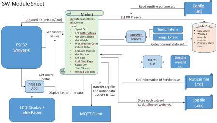
Zuletzt der Funktions-Programmflussplan der Loop() Schleife:
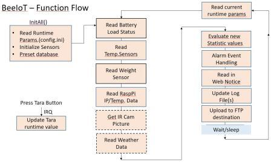
Mögliche Debugmeldungen habe ich über ein simples Macro parametrisiert:
#define BHLOG(m) if(lflags & m) // macro for Log evaluation
uint16_t lflags; // BeeIoT log flag field; for flags enter beeiot.h
void setup(){
// lflags = LOGBH + LOGOW + LOGHX + LOGLAN + LOGEPD + LOGSD + LOGADS + LOGSPI + LOGLORAR + LOGLORAW;
lflags = LOGBH + LOGLORAW + LOGLAN;
Darüber kann man nach Belieben verschiedene Funktionsbereiche in den verbose mode schalten und analysieren, so dass der Log-Output nicht von unnötigen Meldungen überschwemmt wird.
Mit den obigen 3 Schalter: LOGBH + LOGLORAW + LOGLAN erhält man den Loglevel code: 1 + 16 + 512 = 529
Bei allen Log Flags gesetzt (65535), könnte der Konsol-Output wie folgt aussehen:
>*******************************<
> BeeIoT - BeeHive Weight Scale <
> by R.Esser (c) 10/2019 <
>*******************************<
LogLevel: 65535
Start Sensor Setup Phase ...
Setup: ESP32 DevKitC Chip ID = DCxxxxxxxxxxxx
Setup: Init runtime config settings
Setup: Init RTC Module DS3231
RTC: Temperature: 22.25 °C, SqarePin switched off
RTC: STart RTC Test Output ...
2020/2/18 (Tuesday) 16:36:48
since midnight 1/1/1970 = 1582043808s = 18310d
now + 7d + 30s: 2020/2/26 5:6:54
RTC: Get RTC Time: 2020-02-18T16:36:48 - 2020-02-18 - 16:36:48
2020-02-18T16:36:48
Setup: SPI Devices ...
MSPI: VSPI port for 3 devices
MSPI: SPI-Init of SD card...
MSPI: SD Card mounted
MSPI: SPI-Init: ePaper EPD part1 ...
Setup: HX711 Weight Cell
HX711: init Weight cell ADC port
HX711: Offset(raw): 297570 - Unit(raw): 44000 per kg
Setup: ADS11x5
ADS: Init I2C-port incl. Alert line
Setup: Wifi in Station Mode
WiFi: Init port in station mode
Wifi: Scan started...done
Wifi: networks found: 1
1: MyNet (-66)*
WIFI: Connect.ed with DomNet - IP: 192.168.0.02
WIFI: MDNS-Responder gestartet.
Setup: Init NTP Client
Tuesday, February 18 2020 16:36:51
Setup: Get new Date & Time:
NTP2RTC: set new RTC Time: 2020-02-18T16:36:51
RTC: Get RTC Time: 2020-02-18T16:36:51 - 2020-02-18 - 16:36:51
NTP: BHDB updated by RTC time
Setup: SD Card
SD: SD Card Type: SDSC - Size: 1938MB
SD: File /logdata.txt found
Setup: LoRa SPI device & Base layer
LoRa: Cfg Lora Modem V1.0.1 (868100000 Mhz)
LoRaCfg: Set Modem/Channel-Cfg[0]: 868100000Mhz, SF=7, TXPwr:14, BW:125000, CR:5,
LPreamble:12, SW:0x12, CRC, noInvIQ LoraCfg: StdBy Mode
LoRa: assign ISR to DIO0 - default: GWID:0x99, NodeID:0x80
BeeIoTJoin: Start Joining for a GW
BIoT_getmic: Add MIC[4] = xx xx xx xx for Msg[255]
LoRaCfg: Set Modem/Channel-Cfg[0]: 868100000Mhz, SF=7, TXPwr:14, BW:125000, CR:5,
LPreamble:12 SW:0x12, CRC, noInvIQ LoraCfg: StdBy Mode
LoRaSend: TXData <PkgLen= 29By>
sendMessage: Start TX
LoRaSend(0x80>0x99)[255](cmd=0) <FrmLen: 20By>
BeeIotJoin: JOIN-Retry: #0 (Overall retries: 0)
BeeIoTJoin: waiting for RX-CONFIG Pkg. in RXCont mode:ooooo
onReceive: got Pkg: len 0x11
MSGfield at 0x3FFC13B4:
Address: 0 1 2 3 4 5 6 7 8 9 A B C D E F lenght=5Byte
+ 0: 8099 FF06 08 <.....>
onReceive: RX(0x99>0x80)[255]:(cmd=6: CONFIG) DataLen=8 Bytes
BeeIotJoin: RX pkg received: CONFIG
BeeIotJoin: RX Queue Status: SrvIdx:0, IsrIdx:1, new PkgID:255, RXFlag:1
BeeIoTParse[255]: cmd= CONFIG -> switch to new channel cfg.
BeeIoTParseCfg: New Configuration: BIoT-Interval: 600sec., Verbose:0, ChIndex:0, NDID:0x01, GwID:0x08, MsgCnt:255
Lora: Joined! New: GWID:0x08, NodeID:0x01, msgcount:255
DEVEUI: 0x-xx-xx-xx-xx-xx-xx-xx-xx
JOINEUI: 0x-xx-xx-xx-xx-xx-xx-xx-xx
DEVKEY: 0x-xxxx-xxxx-xxxx-xxxx-xxxx-xxxx-xxxx-xxxx
BeeIoTSleep()
Lora: Sleep Mode
Setup: OneWire Bus setup
OWBus: Init OneWire Bus
OWBus: Locating devices...Found 0 devices.
Device 0: Int-Address: 28201F8E1Fxxxxxx DS18B20
Device 1: BH. Address: 28AAE46D18xxxxxx DS18B20
Device 2: Ext.Address: 28AACA6A18xxxxxx DS18B20
OWBus: Current Sensor Resolution: 0
OWBUS: set sensor resolution: 0
OWBus: Requesting temperatures...
OWBus: Int.Temp.Sensor (°C): 20.69
OWBus: Bee.Temp.Sensor (°C): -127.00 (-> ext. Sensor nicht angeschlossen)
OWBus: Ext.Temp.Sensor (°C): 20.62
Setup: ePaper + show start frame
EPD: Start ePaper Display
EPD: print Welcome Display
EPD: Draw BitmapWaveshare
Setup Phase done
=> here starts the sensor read loop forever
Im Kern durchläuft man in der Setup Phase alle Setup Routinen der einzelnen Komponenten in der Reihenfolge, wie sie voneinander abhängig sind und wo möglich nach Protokoll Klassen sortiert.
So liegen die SPI devices und I2C devices hintereinander, zwecks gleicher Vorbereitung. Optionale Resourcen (WiFi + NTP), als auch das ePaper, enthalten einen Error bypass, so dass der Logger auch ohne deren Initialisierung anläuft. Das ist bei einem Stromausfall wichtig, da nach Wiedereinschaltung das Programm ja munter darauflos-startet und das Logging samt Übetragung fortsetzen möchte.
Die Logik der Setup-Bereiche:
Seltsamerweise musste ich die Initialisierung des OneWireBus APIs an das Ende setzen, sonst werden die Temperatursensoren nur beim ersten mal richtig ausgelesen, und danach immer mit denselben Werten.
ToDo: => Ein Fehler im Programm oder in der Library ?
Die Aktionen über WiFi ( Scan + NTP + WebPage) würde ich im Normalbetrieb bei funktionierendem LoRaWAN wahrscheinlich ganz abschalten müssen, um den erwarteten Stromverbauch zu erreichen. Denn in der “Pampa” habe ich keinen WiFi-AP nötig, und die Config settings könnte ich auch statisch auf die SD Card uploaden. Für den Heimbetrieb ist es wiederum effektiver als LoRaWan.
Hinweis:
Es kommt vor, dass nach dem Upload das Programm schon erwartungsgemäß losläuft und der Welcome Screen gezeigt wird. In der Regel wir das WiFi auch konnektiert. Starten man in der Setup-Phase (also bis zum Welcome Screen) den Serial Monitor der IDE zu früh, wird das Programm mitten im Wifi-Setup neugestartet, aber eine WiFi Connection schlägt dann meistens fehl.
In dem Fall ist ein Stop (^C) und Restart des seriellen Monitors nötig um auch den WiFi Betrieb zu erhalten. Möglicherweise nimmt der WiFi Router zeitlich zu eng liegende Reconnect- Anforderungen übel…
Wie bei Arduino’s üblich, wird nach dem Ende der Setupphase automatisch die Loop Routine angesprungen; diese dann aber in einer Endlosschleife:
Am Serial Monitor zeigt sie sich so:
>*******************************************<
> Start next BeeIoT Weight Scale loop
> Loop# 0 (Laps: 0, BHDB[0])
>*******************************************<
RTC: Get RTC Time: 2020-02-18T16:37:36 - 2020-02-18 - 16:37:36
NTP: BHDB updated by RTC time
Loop: Weight(raw) : -234817 - Weight(unit): -5.337 kg (bei offenem Deckel ohne Gewicht)
OWBus: Init OneWire Bus
OWBus: Locating devices...Found 3 devices.
Device 0: Int-Address: 28201F8E1F130185 DS18B20
Device 1: BH. Address: 28AAE46D1813022F DS18B20
Device 2: Ext.Address: 28AACA6A181302F3 DS18B20
OWBus: Current Sensor Resolution: 0
OWBUS: set sensor resolution: 0
OWBus: Requesting temperatures...
OWBus: Int.Temp.Sensor (°C): 20.69
OWBus: Bee.Temp.Sensor (°C): -127.00
OWBus: Ext.Temp.Sensor (°C): 20.56
Loop: ADSPort(0-3):
ADS: Single-ended read from AIN0: 3.28V -
ADS: Single-ended read from AIN1: 4.99V -
ADS: Single-ended read from AIN2: 3.95V (78%) -
ADS: Single-ended read from AIN3: 2.54V
Loop[0]: 2020-02-18 16:37:36,-5.34,20.56,20.69,-127.00,22.25,3.28,5.09,4.99,3.95,78#0 o.k.
SD: Appending to file: /logdata.txt...Done
LoRaLog: BeeIoTStatus = 6
BeeIoTWakeUp()
LoRaCfg: Set Modem/Channel-Cfg[0]: 868100000Mhz, SF=7, TXPwr:14, BW:125000, CR:5,
LPreamble:12 SW:0x12, CRC, noInvIQ LoraCfg: StdBy Mode
BIoT_getmic: Add MIC[4] = xx xx xx xx for Msg[0]
LoRaSend: TXData <PkgLen= 92By>
sendMessage: Start TX
LoRaSend(0x01>0x08)[0](cmd=2) <FrmLen: 83By>
MSGfield at 0x3FFC1334:
Address: 0 1 2 3 4 5 6 7 8 9 A B C D E F lenght=92Byte
+ 0: 0801 0002 5332 3032 302D 3032 2D31 3820 <....S2020-02-18 >
+ 10: 3136 3A33 373A 3336 2C2D 352E 3334 2C32 <16:37:36,-5.34,2>
+ 20: 302E 3536 2C32 302E 3639 2C2D 3132 372E <0.56,20.69,-127.>
+ 30: 3030 2C32 322E 3235 2C33 2E32 382C 352E <00,22.25,3.28,5.>
+ 40: 3039 2C34 2E39 392C 332E 3935 2C37 3823 <09,4.99,3.95,78#>
+ 50: 3020 6F2E 6B2E 0D00 xxxx xxxx <0 o.k.......>
LoRaLog: wait for incoming ACK in RXCont mode (Retry: #0)...
onReceive: got Pkg: len 0x09
MSGfield at 0x3FFC1434:
Address: 0 1 2 3 4 5 6 7 8 9 A B C D E F lenght=5Byte
+ 0: 0108 0005 00 <.....>
onReceive: RX(0x08>0x01)[0]:(cmd=5: ACK) DataLen=0 Bytes
LoRaLog: wait for add. RX1 Pkg. (RXCont):oooooooooo None.
LoraLog: Enter Sleep Mode
BeeIoTSleep()
Lora: Sleep Mode
LoRaLog: Msg sent done, RX Queue Status: SrvIdx:1, IsrIdx:1, NextMsgID:257, RXFlag:0
Loop: Show Sensor Data on EPD
Loop: Enter Sleep/Wait Mode for 600 sec.
Der Logik-Ablauf für die loop() Routine:
Im folgenden Beispiel (Stand 1.4.2021) besteht der Payload der Sensordaten aus einem ASCII Stream (z.B. 82Byte) mit folgendem Format:
“2021/03/24 22:55:52,31.860,2.37,4.44,19.94,5.25,3.36,0.00,0.00,3.96,82 #2397 o.k.” + 0x00
Zur Reduktion des Dutycycles bei der LoRa Übertragung ist ein Binärformat effektiver:
Daher wird das Streamformat in ein Binärformat wie folgt umgesetzt:
Datum,Zeit,GewichtBeute,Temp.Extern,TempIntern,Temp.Beute1,Temp.RTC,Batt.ESP3V,Board5V,BattCharge,BattLoad,BattLevel
| Datentyp | Range | ASCII(e.g.81By) | Binär(28+1+\ |
|---|---|---|---|
| LogID | 0 - 9999 | 2397 | uint16_t xxxx |
| Datum+Zeit: | 2021/03/24 22:55:52 | DateTime format (RTClib.h): | |
| uint8_t yOff < 2000 + yOff | |||
| uint8_t mm < Month 1-12 | |||
| uint8_t dd < Day 1-31 | |||
| uint8_t hh < Hours 0-23 | |||
| uint8_t mm < Minutes 0-59 | |||
| uint8_t ss < Seconds 0-59 | |||
| Gewicht | 0 - 99.999 | 31.860 | uint16_t wwww < in Gramm |
| TempExtern | 0 - 99.99 | 2.37 | uint16_t ccdd < in Celsius+2digits |
| TempIntern | 0 - 99.99 | 4.44 | uint16_t ccdd < in Celsius+2digits |
| TempBeute | 0 - 99.99 | 19.94 | uint16_t ccdd < in Celsius+2digits |
| TempRTC | 0 - 99.99 | 5.25 | uint16_t ccdd < in Celsius+2digits |
| BattESP3V | 0 - 9.99 | 3.36 | uint16_t vvvv < in mV |
| Board5V | 0 - 9.99 | 5.00 | uint16_t vvvv < in mV |
| BattCharge | 0 - 9.99 | 0.00 | uint16_t vvvv < in mV |
| BattLoad | 0 - 9.99 | 3.96 | uint16_t vvvv < in mV |
| BattLevel | 0 - 100 | 82 | uint8_t pp < % |
| CRC8 | 0 - 255 | - | uint8_t xx < CRC8 |
| Notice | “o.k.” |
Nach dem Aufbau und erstem Einschalten wird die Waage noch wilde Werte anzeigen, weil der 0 kg Bezug nicht passend ist.
Im Kapitel: AD Wandler HX711
haben wir folgende Richtwerte errechnet:
Nun gilt es noch den scale_Offset Wert zu ermitteln, wie in der header datei HX711Scale.h definiert.
Dazu dient folgende Vorgehensweise:
Nun sollte ohne jedes Gewicht weiterhin 0,0kg angezeigt werden, und das rerenzgewicht mit dem richtigen kg-Wert.
Die Waage ist nun kalibriert und einsatzbereit
Als Refernzgewicht eignet sich auch ein gut bekanntes eigenes Körpergewicht:
-> Aufsteigen, und Deltawert durch bekanntes Körpergewicht als REFKG angeben.
Vorteil: Der Messfehler ist um die Anzahl Kg des Körpergewichts kleiner als nur bei einem kleinen Refernzgewicht.
Da man massgeblich nur an den relativen Messwerten z.B. zur Diagrammdarstellung interessiert ist, ist derartige Kalibrierung nur einmal bei der Erstaufstellung nötig. Danach reicht die relative Aussage als Messkurve.
Soweit der Aufbau der Binenstockwaage. Wenn euch noch weitere Angaben für einen erfolgreichen Aufbau fehlen, lasst es mich wissen. Ansonsten viel Spass dabei…
Die Daten werden vom Sensorclient zum RPi-Gateway z.B. über LoRaWAN verschlüsselt übermittelt.
Dort werden sie über die Zeit in einer CSV Datei zeilenweise aufgesammelt und es entsteht der Bedarf, diese als Funktions-Diagramme darzustellen.
Will man also diese Messergebnisse als Webpage darstellen (z.B. via Dygraph library) bietet sich als HTTP Service standardmäßig der Apache 2 Webserver an:
Apache 2 Webserver installieren:
ToDo: “Hier folgt nun die Beschreibung der Webpage Datei: index.html zur darstellung der Datendiagramme mittels Dygraph-library”
Beipiel: http://randolphesser.de/imkerei/index.html
=> Menü: Bienenstockwaage
für eine WebUI Erweiterung (Farbig markierte Vorschläge sind in v1.3 schon umgesetzt):
Wettervorhersage tool: sudo apt-get install weather-util
Flughafen München „Franz Josef Strauß“ (IATA-Code: MUC, ICAO-Code: EDDM)
Test with Weather eddm
Daten-Transfer und Web Anbindung per GSM Module
Bienen-Stock Aussen-Kamera mit IR: Zur Kontrolle des Volkssitz im Winter
Weitere interessante Messwerte
Farbig markierte Vorschläge sind in der aktuellen Programmversion v2.0 bereits enthalten.
Aus: Imker-Stockwaage.de
Siehe auch unter: http://www.kasmocom.de
und suchen dort unter: M2M PrePaid-SIM
Ansonsten kann jede Prepaid-SIM verwendet werden.
Es gibt auch kostenlose SIM´s mit kostenlosem Datenvolumen.
Für die BeeIoT Lösung ist eine NB-LTE(IoT)SIM nötig.
Professionelle Anbieter digitaler Bienenstockwaagen in der EU:
Weitere Bienenstockwaage-Projekte im Eigenbau (Hobby- und Open Source-Projekte):
Das war es soweit erstmal von meiner Seite.
Viel Spass damit und einen Imkerlichen Gruss
wünscht Euch
Randolph Esser
(mail(a)RandolphEsser.de)
www.RandolphEsser.de
==> Imkerei